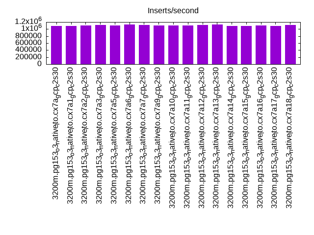
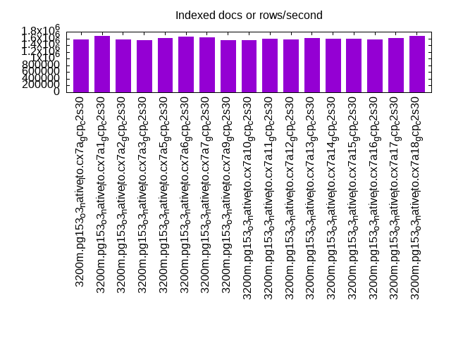
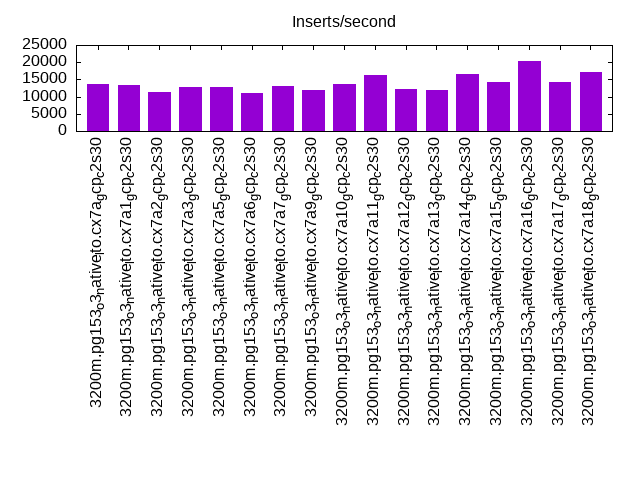
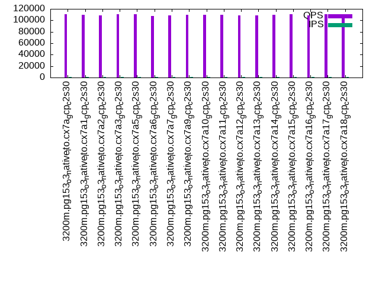
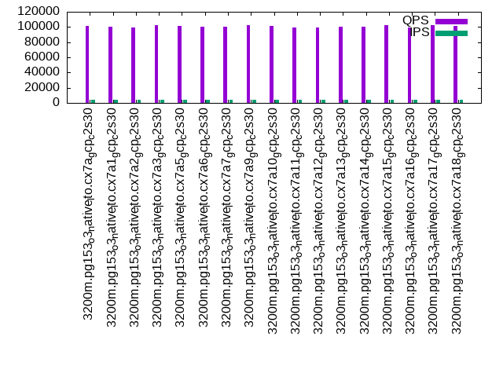
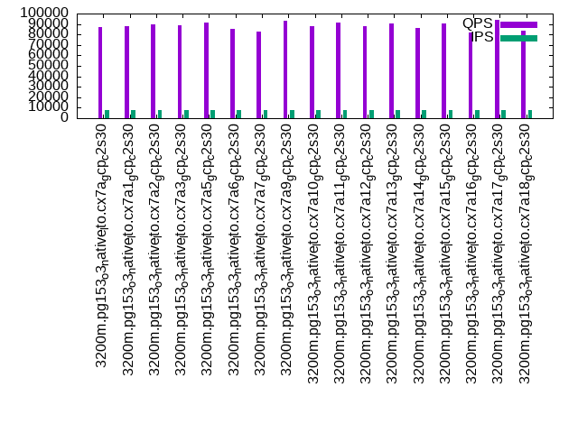

This is a report for the insert benchmark with 3200M docs and 8 client(s). It is generated by scripts (bash, awk, sed) and Tufte might not be impressed. An overview of the insert benchmark is here and a short update is here. Below, by DBMS, I mean DBMS+version.config. An example is my8020.c10b40 where my means MySQL, 8020 is version 8.0.20 and c10b40 is the name for the configuration file.
The test server is a c2-standard-30 with 15 cores, hyperthreads disabled, 120G RAM and XFS with SW RAID 0 across 4 NVMe SSD. The benchmark was run with 8 clients and there were 1 or 3 connections per client (1 for queries or inserts without rate limits, 1+1 for rate limited inserts+deletes). It uses 8 tables, 1 per client. It loads 400M rows per table without secondary indexes, creates secondary indexes, then inserts 20M rows per table with a delete per insert to avoid growing the table. It then does 3 read+write tests for 3600s each that do queries as fast as possible with 100, 500 and then 1000 inserts/second/client concurrent with the queries and 1000 deletes/second to avoid growing the table. The database is larger than memory. Clients and the DBMS share one server. The per-database configs are in the per-database subdirectories here.
The tested DBMS are:
The numbers are inserts/s for l.i0 and l.i1, indexed docs (or rows) /s for l.x and queries/s for q*.2. The values are the average rate over the entire test for inserts (IPS) and queries (QPS). The range of values for IPS and QPS is split into 3 parts: bottom 25%, middle 50%, top 25%. Values in the bottom 25% have a red background, values in the top 25% have a green background and values in the middle have no color. A gray background is used for values that can be ignored because the DBMS did not sustain the target insert rate. Red backgrounds are not used when the minimum value is within 80% of the max value.
| dbms | l.i0 | l.x | l.i1 | q100.1 | q500.1 | q1000.1 |
|---|---|---|---|---|---|---|
| 3200m.pg153_o3_native_lto.cx7a_gcp_c2s30 | 1088435 | 1567908 | 13575 | 110619 | 101069 | 87041 |
| 3200m.pg153_o3_native_lto.cx7a1_gcp_c2s30 | 1086219 | 1683377 | 13479 | 109709 | 100861 | 87797 |
| 3200m.pg153_o3_native_lto.cx7a2_gcp_c2s30 | 1102308 | 1567908 | 11406 | 108368 | 99268 | 89428 |
| 3200m.pg153_o3_native_lto.cx7a3_gcp_c2s30 | 1109955 | 1558743 | 12734 | 110946 | 102516 | 89054 |
| 3200m.pg153_o3_native_lto.cx7a5_gcp_c2s30 | 1098901 | 1604864 | 12918 | 110625 | 101419 | 91664 |
| 3200m.pg153_o3_native_lto.cx7a6_gcp_c2s30 | 1135154 | 1644450 | 11034 | 107750 | 100477 | 85092 |
| 3200m.pg153_o3_native_lto.cx7a7_gcp_c2s30 | 1111111 | 1639395 | 13116 | 109102 | 100263 | 83182 |
| 3200m.pg153_o3_native_lto.cx7a9_gcp_c2s30 | 1104210 | 1558743 | 12052 | 109674 | 102433 | 93019 |
| 3200m.pg153_o3_native_lto.cx7a10_gcp_c2s30 | 1103829 | 1552693 | 13585 | 109566 | 101098 | 88199 |
| 3200m.pg153_o3_native_lto.cx7a11_gcp_c2s30 | 1097017 | 1588928 | 16165 | 109439 | 99349 | 91755 |
| 3200m.pg153_o3_native_lto.cx7a12_gcp_c2s30 | 1113818 | 1571758 | 12133 | 108605 | 99186 | 87965 |
| 3200m.pg153_o3_native_lto.cx7a13_gcp_c2s30 | 1124780 | 1601652 | 12049 | 108624 | 99881 | 90285 |
| 3200m.pg153_o3_native_lto.cx7a14_gcp_c2s30 | 1089918 | 1582641 | 16434 | 109243 | 100164 | 86637 |
| 3200m.pg153_o3_native_lto.cx7a15_gcp_c2s30 | 1094017 | 1590507 | 14202 | 110957 | 102040 | 90648 |
| 3200m.pg153_o3_native_lto.cx7a16_gcp_c2s30 | 1104972 | 1565607 | 20317 | 108724 | 99382 | 82044 |
| 3200m.pg153_o3_native_lto.cx7a17_gcp_c2s30 | 1093643 | 1618665 | 14311 | 111122 | 102247 | 93870 |
| 3200m.pg153_o3_native_lto.cx7a18_gcp_c2s30 | 1113431 | 1668457 | 17195 | 110334 | 101439 | 83336 |
This table has relative throughput, throughput for the DBMS relative to the DBMS in the first line, using the absolute throughput from the previous table.
| dbms | l.i0 | l.x | l.i1 | q100.1 | q500.1 | q1000.1 |
|---|---|---|---|---|---|---|
| 3200m.pg153_o3_native_lto.cx7a_gcp_c2s30 | 1.00 | 1.00 | 1.00 | 1.00 | 1.00 | 1.00 |
| 3200m.pg153_o3_native_lto.cx7a1_gcp_c2s30 | 1.00 | 1.07 | 0.99 | 0.99 | 1.00 | 1.01 |
| 3200m.pg153_o3_native_lto.cx7a2_gcp_c2s30 | 1.01 | 1.00 | 0.84 | 0.98 | 0.98 | 1.03 |
| 3200m.pg153_o3_native_lto.cx7a3_gcp_c2s30 | 1.02 | 0.99 | 0.94 | 1.00 | 1.01 | 1.02 |
| 3200m.pg153_o3_native_lto.cx7a5_gcp_c2s30 | 1.01 | 1.02 | 0.95 | 1.00 | 1.00 | 1.05 |
| 3200m.pg153_o3_native_lto.cx7a6_gcp_c2s30 | 1.04 | 1.05 | 0.81 | 0.97 | 0.99 | 0.98 |
| 3200m.pg153_o3_native_lto.cx7a7_gcp_c2s30 | 1.02 | 1.05 | 0.97 | 0.99 | 0.99 | 0.96 |
| 3200m.pg153_o3_native_lto.cx7a9_gcp_c2s30 | 1.01 | 0.99 | 0.89 | 0.99 | 1.01 | 1.07 |
| 3200m.pg153_o3_native_lto.cx7a10_gcp_c2s30 | 1.01 | 0.99 | 1.00 | 0.99 | 1.00 | 1.01 |
| 3200m.pg153_o3_native_lto.cx7a11_gcp_c2s30 | 1.01 | 1.01 | 1.19 | 0.99 | 0.98 | 1.05 |
| 3200m.pg153_o3_native_lto.cx7a12_gcp_c2s30 | 1.02 | 1.00 | 0.89 | 0.98 | 0.98 | 1.01 |
| 3200m.pg153_o3_native_lto.cx7a13_gcp_c2s30 | 1.03 | 1.02 | 0.89 | 0.98 | 0.99 | 1.04 |
| 3200m.pg153_o3_native_lto.cx7a14_gcp_c2s30 | 1.00 | 1.01 | 1.21 | 0.99 | 0.99 | 1.00 |
| 3200m.pg153_o3_native_lto.cx7a15_gcp_c2s30 | 1.01 | 1.01 | 1.05 | 1.00 | 1.01 | 1.04 |
| 3200m.pg153_o3_native_lto.cx7a16_gcp_c2s30 | 1.02 | 1.00 | 1.50 | 0.98 | 0.98 | 0.94 |
| 3200m.pg153_o3_native_lto.cx7a17_gcp_c2s30 | 1.00 | 1.03 | 1.05 | 1.00 | 1.01 | 1.08 |
| 3200m.pg153_o3_native_lto.cx7a18_gcp_c2s30 | 1.02 | 1.06 | 1.27 | 1.00 | 1.00 | 0.96 |
This lists the average rate of inserts/s for the tests that do inserts concurrent with queries. For such tests the query rate is listed in the table above. The read+write tests are setup so that the insert rate should match the target rate every second. Cells that are not at least 95% of the target have a red background to indicate a failure to satisfy the target.
| dbms | q100.1 | q500.1 | q1000.1 |
|---|---|---|---|
| pg153_o3_native_lto.cx7a_gcp_c2s30 | 797 | 3987 | 7978 |
| pg153_o3_native_lto.cx7a1_gcp_c2s30 | 797 | 3987 | 7978 |
| pg153_o3_native_lto.cx7a2_gcp_c2s30 | 797 | 3987 | 7976 |
| pg153_o3_native_lto.cx7a3_gcp_c2s30 | 797 | 3987 | 7976 |
| pg153_o3_native_lto.cx7a5_gcp_c2s30 | 798 | 3987 | 7978 |
| pg153_o3_native_lto.cx7a6_gcp_c2s30 | 798 | 3987 | 7875 |
| pg153_o3_native_lto.cx7a7_gcp_c2s30 | 797 | 3987 | 7976 |
| pg153_o3_native_lto.cx7a9_gcp_c2s30 | 797 | 3987 | 7976 |
| pg153_o3_native_lto.cx7a10_gcp_c2s30 | 798 | 3988 | 7976 |
| pg153_o3_native_lto.cx7a11_gcp_c2s30 | 797 | 3980 | 7976 |
| pg153_o3_native_lto.cx7a12_gcp_c2s30 | 797 | 3987 | 7976 |
| pg153_o3_native_lto.cx7a13_gcp_c2s30 | 798 | 3987 | 7976 |
| pg153_o3_native_lto.cx7a14_gcp_c2s30 | 797 | 3987 | 7978 |
| pg153_o3_native_lto.cx7a15_gcp_c2s30 | 797 | 3987 | 7976 |
| pg153_o3_native_lto.cx7a16_gcp_c2s30 | 798 | 3988 | 7958 |
| pg153_o3_native_lto.cx7a17_gcp_c2s30 | 797 | 3987 | 7976 |
| pg153_o3_native_lto.cx7a18_gcp_c2s30 | 797 | 3988 | 7976 |
| target | 800 | 4000 | 8000 |
l.i0: load without secondary indexes. Graphs for performance per 1-second interval are here.
Average throughput:
Insert response time histogram: each cell has the percentage of responses that take <= the time in the header and max is the max response time in seconds. For the max column values in the top 25% of the range have a red background and in the bottom 25% of the range have a green background. The red background is not used when the min value is within 80% of the max value.
| dbms | 256us | 1ms | 4ms | 16ms | 64ms | 256ms | 1s | 4s | 16s | gt | max |
|---|---|---|---|---|---|---|---|---|---|---|---|
| pg153_o3_native_lto.cx7a_gcp_c2s30 | 97.372 | 2.548 | 0.050 | 0.011 | 0.017 | 0.002 | 0.601 | ||||
| pg153_o3_native_lto.cx7a1_gcp_c2s30 | 97.529 | 2.416 | 0.029 | 0.009 | 0.015 | 0.002 | 0.845 | ||||
| pg153_o3_native_lto.cx7a2_gcp_c2s30 | 97.264 | 2.651 | 0.054 | 0.014 | 0.017 | 0.001 | 0.541 | ||||
| pg153_o3_native_lto.cx7a3_gcp_c2s30 | 97.998 | 1.950 | 0.027 | 0.008 | 0.015 | 0.002 | 0.726 | ||||
| pg153_o3_native_lto.cx7a5_gcp_c2s30 | 97.503 | 2.420 | 0.047 | 0.011 | 0.017 | 0.002 | 0.923 | ||||
| pg153_o3_native_lto.cx7a6_gcp_c2s30 | 97.542 | 2.428 | 0.024 | 0.003 | 0.002 | 0.001 | 0.716 | ||||
| pg153_o3_native_lto.cx7a7_gcp_c2s30 | 97.249 | 2.679 | 0.040 | 0.020 | 0.011 | 0.001 | 0.498 | ||||
| pg153_o3_native_lto.cx7a9_gcp_c2s30 | 97.417 | 2.496 | 0.058 | 0.012 | 0.016 | 0.001 | 0.412 | ||||
| pg153_o3_native_lto.cx7a10_gcp_c2s30 | 97.594 | 2.323 | 0.053 | 0.013 | 0.017 | 0.001 | 0.657 | ||||
| pg153_o3_native_lto.cx7a11_gcp_c2s30 | 97.162 | 2.760 | 0.051 | 0.011 | 0.014 | 0.003 | 0.722 | ||||
| pg153_o3_native_lto.cx7a12_gcp_c2s30 | 97.400 | 2.533 | 0.050 | 0.009 | 0.007 | 0.001 | 0.768 | ||||
| pg153_o3_native_lto.cx7a13_gcp_c2s30 | 97.539 | 2.416 | 0.030 | 0.010 | 0.005 | 0.001 | 0.553 | ||||
| pg153_o3_native_lto.cx7a14_gcp_c2s30 | 97.300 | 2.620 | 0.051 | 0.012 | 0.015 | 0.002 | 0.716 | ||||
| pg153_o3_native_lto.cx7a15_gcp_c2s30 | 97.206 | 2.716 | 0.047 | 0.015 | 0.014 | 0.002 | 0.612 | ||||
| pg153_o3_native_lto.cx7a16_gcp_c2s30 | 97.788 | 2.138 | 0.050 | 0.007 | 0.014 | 0.003 | 0.821 | ||||
| pg153_o3_native_lto.cx7a17_gcp_c2s30 | 97.100 | 2.813 | 0.058 | 0.012 | 0.016 | 0.001 | 0.418 | ||||
| pg153_o3_native_lto.cx7a18_gcp_c2s30 | 97.914 | 2.034 | 0.027 | 0.008 | 0.016 | 0.001 | 0.557 |
Performance metrics for the DBMS listed above. Some are normalized by throughput, others are not. Legend for results is here.
ips qps rps rmbps wps wmbps rpq rkbpq wpi wkbpi csps cpups cspq cpupq dbgb1 dbgb2 rss maxop p50 p99 tag 1088435 0 560 4.4 1493.0 294.9 0.001 0.004 0.001 0.277 92695 81.1 0.085 11 306.2 376.2 0.0 0.601 143699 44851 3200m.pg153_o3_native_lto.cx7a_gcp_c2s30 1086219 0 560 4.4 1408.7 275.5 0.001 0.004 0.001 0.260 92613 81.2 0.085 11 306.2 376.2 0.0 0.845 142396 51041 3200m.pg153_o3_native_lto.cx7a1_gcp_c2s30 1102308 0 578 4.5 1477.2 301.8 0.001 0.004 0.001 0.280 93188 81.4 0.085 11 306.2 376.2 0.0 0.541 145195 59435 3200m.pg153_o3_native_lto.cx7a2_gcp_c2s30 1109955 0 564 4.4 1376.9 261.4 0.001 0.004 0.001 0.241 94075 81.7 0.085 11 306.2 376.2 0.0 0.726 145593 47647 3200m.pg153_o3_native_lto.cx7a3_gcp_c2s30 1098901 0 570 4.5 1480.1 294.3 0.001 0.004 0.001 0.274 92802 81.3 0.084 11 306.2 376.2 0.0 0.923 145042 47147 3200m.pg153_o3_native_lto.cx7a5_gcp_c2s30 1135154 0 582 4.6 1529.6 321.4 0.001 0.004 0.001 0.290 94486 84.2 0.083 11 306.2 376.2 0.0 0.716 145342 87105 3200m.pg153_o3_native_lto.cx7a6_gcp_c2s30 1111111 0 560 4.4 1698.4 321.1 0.001 0.004 0.002 0.296 94696 82.1 0.085 11 306.2 322.2 0.0 0.498 145440 59134 3200m.pg153_o3_native_lto.cx7a7_gcp_c2s30 1104210 0 554 4.4 1514.9 308.1 0.001 0.004 0.001 0.286 92460 81.9 0.084 11 306.2 376.2 0.0 0.412 145240 56061 3200m.pg153_o3_native_lto.cx7a9_gcp_c2s30 1103829 0 569 4.5 1517.0 299.2 0.001 0.004 0.001 0.278 93296 81.5 0.085 11 306.2 376.2 0.0 0.657 145241 49746 3200m.pg153_o3_native_lto.cx7a10_gcp_c2s30 1097017 0 557 4.4 1472.8 296.2 0.001 0.004 0.001 0.277 92190 81.2 0.084 11 306.2 376.2 0.0 0.722 144542 43152 3200m.pg153_o3_native_lto.cx7a11_gcp_c2s30 1113818 0 571 4.5 1529.5 315.8 0.001 0.004 0.001 0.290 93748 82.6 0.084 11 306.2 376.2 0.0 0.768 144543 66827 3200m.pg153_o3_native_lto.cx7a12_gcp_c2s30 1124780 0 570 4.5 1471.1 317.6 0.001 0.004 0.001 0.289 93944 83.2 0.084 11 306.2 376.2 0.0 0.553 145242 78213 3200m.pg153_o3_native_lto.cx7a13_gcp_c2s30 1089918 0 556 4.4 1477.7 296.6 0.001 0.004 0.001 0.279 91735 81.4 0.084 11 306.2 376.2 0.0 0.716 143902 44251 3200m.pg153_o3_native_lto.cx7a14_gcp_c2s30 1094017 0 555 4.4 1605.0 310.4 0.001 0.004 0.001 0.291 91607 82.0 0.084 11 306.2 338.2 0.0 0.612 144342 48147 3200m.pg153_o3_native_lto.cx7a15_gcp_c2s30 1104972 0 537 4.2 1363.7 265.0 0.000 0.004 0.001 0.246 93105 81.4 0.084 11 306.2 376.2 0.0 0.821 146241 44951 3200m.pg153_o3_native_lto.cx7a16_gcp_c2s30 1093643 0 558 4.4 1496.1 302.6 0.001 0.004 0.001 0.283 91986 81.5 0.084 11 306.2 376.2 0.0 0.418 143643 59036 3200m.pg153_o3_native_lto.cx7a17_gcp_c2s30 1113431 0 546 4.3 1365.1 257.1 0.000 0.004 0.001 0.236 93830 82.3 0.084 11 306.2 376.2 0.0 0.557 145342 53641 3200m.pg153_o3_native_lto.cx7a18_gcp_c2s30
l.x: create secondary indexes.
Average throughput:
Performance metrics for the DBMS listed above. Some are normalized by throughput, others are not. Legend for results is here.
ips qps rps rmbps wps wmbps rpq rkbpq wpi wkbpi csps cpups cspq cpupq dbgb1 dbgb2 rss maxop p50 p99 tag 1567908 0 5688 712.7 1485.3 335.5 0.004 0.465 0.001 0.219 41059 34.8 0.026 3 588.1 658.2 0.0 0.002 NA NA 3200m.pg153_o3_native_lto.cx7a_gcp_c2s30 1683377 0 5715 739.6 1427.8 321.8 0.003 0.450 0.001 0.196 16237 37.7 0.010 3 588.1 657.7 0.0 0.002 NA NA 3200m.pg153_o3_native_lto.cx7a1_gcp_c2s30 1567908 0 5696 720.3 1466.3 332.1 0.004 0.470 0.001 0.217 41844 34.8 0.027 3 588.1 658.2 0.0 0.002 NA NA 3200m.pg153_o3_native_lto.cx7a2_gcp_c2s30 1558743 0 5827 722.4 1462.0 331.5 0.004 0.475 0.001 0.218 41644 34.7 0.027 3 588.1 658.2 0.0 0.002 NA NA 3200m.pg153_o3_native_lto.cx7a3_gcp_c2s30 1604864 0 5649 695.7 1586.6 353.3 0.004 0.444 0.001 0.225 40039 35.9 0.025 3 588.1 658.2 0.0 0.002 NA NA 3200m.pg153_o3_native_lto.cx7a5_gcp_c2s30 1644450 0 5818 700.9 1531.3 365.4 0.004 0.436 0.001 0.228 7427 35.8 0.005 3 588.1 658.2 0.0 0.002 NA NA 3200m.pg153_o3_native_lto.cx7a6_gcp_c2s30 1639395 0 5801 665.6 1552.7 358.2 0.004 0.416 0.001 0.224 41732 36.2 0.025 3 588.1 604.2 0.0 0.002 NA NA 3200m.pg153_o3_native_lto.cx7a7_gcp_c2s30 1558743 0 5463 711.3 1450.9 328.4 0.004 0.467 0.001 0.216 40844 34.8 0.026 3 588.1 658.2 0.0 0.002 NA NA 3200m.pg153_o3_native_lto.cx7a9_gcp_c2s30 1552693 0 5764 705.1 1496.2 336.5 0.004 0.465 0.001 0.222 40307 35.2 0.026 3 588.1 658.2 0.0 0.002 NA NA 3200m.pg153_o3_native_lto.cx7a10_gcp_c2s30 1588928 0 5652 709.6 1515.5 341.1 0.004 0.457 0.001 0.220 40991 35.2 0.026 3 588.1 658.2 0.0 0.002 NA NA 3200m.pg153_o3_native_lto.cx7a11_gcp_c2s30 1571758 0 5880 711.4 1488.5 337.3 0.004 0.463 0.001 0.220 40562 35.1 0.026 3 588.1 658.2 0.0 0.002 NA NA 3200m.pg153_o3_native_lto.cx7a12_gcp_c2s30 1601652 0 5382 699.1 1493.2 346.0 0.003 0.447 0.001 0.221 28420 35.3 0.018 3 588.1 658.2 0.0 0.002 NA NA 3200m.pg153_o3_native_lto.cx7a13_gcp_c2s30 1582641 0 5862 702.4 1489.4 337.4 0.004 0.454 0.001 0.218 40516 35.0 0.026 3 588.1 658.2 0.0 0.002 NA NA 3200m.pg153_o3_native_lto.cx7a14_gcp_c2s30 1590507 0 5676 715.1 1498.2 338.0 0.004 0.460 0.001 0.218 41209 34.7 0.026 3 588.1 620.1 0.0 0.002 NA NA 3200m.pg153_o3_native_lto.cx7a15_gcp_c2s30 1565607 0 5807 720.0 1402.4 318.1 0.004 0.471 0.001 0.208 42049 34.3 0.027 3 588.1 658.2 0.0 0.002 NA NA 3200m.pg153_o3_native_lto.cx7a16_gcp_c2s30 1618665 0 5489 689.4 1532.8 352.2 0.003 0.436 0.001 0.223 39564 35.4 0.024 3 588.1 657.8 0.0 0.002 NA NA 3200m.pg153_o3_native_lto.cx7a17_gcp_c2s30 1668457 0 5441 740.8 1343.7 306.7 0.003 0.455 0.001 0.188 16398 37.1 0.010 3 588.1 658.0 0.0 0.002 NA NA 3200m.pg153_o3_native_lto.cx7a18_gcp_c2s30
l.i1: continue load after secondary indexes created. Graphs for performance per 1-second interval are here.
Average throughput:
Insert response time histogram: each cell has the percentage of responses that take <= the time in the header and max is the max response time in seconds. For the max column values in the top 25% of the range have a red background and in the bottom 25% of the range have a green background. The red background is not used when the min value is within 80% of the max value.
| dbms | 256us | 1ms | 4ms | 16ms | 64ms | 256ms | 1s | 4s | 16s | gt | max |
|---|---|---|---|---|---|---|---|---|---|---|---|
| pg153_o3_native_lto.cx7a_gcp_c2s30 | 0.003 | 28.234 | 48.900 | 22.843 | 0.019 | 0.001 | 0.730 | ||||
| pg153_o3_native_lto.cx7a1_gcp_c2s30 | 25.660 | 49.594 | 24.737 | 0.009 | nonzero | 0.722 | |||||
| pg153_o3_native_lto.cx7a2_gcp_c2s30 | 3.375 | 66.315 | 30.289 | 0.021 | nonzero | 0.343 | |||||
| pg153_o3_native_lto.cx7a3_gcp_c2s30 | 0.056 | 21.697 | 67.935 | 10.303 | 0.009 | nonzero | 0.424 | ||||
| pg153_o3_native_lto.cx7a5_gcp_c2s30 | nonzero | 18.172 | 52.805 | 28.994 | 0.026 | 0.003 | 0.976 | ||||
| pg153_o3_native_lto.cx7a6_gcp_c2s30 | 20.382 | 53.632 | 25.975 | 0.011 | nonzero | 0.364 | |||||
| pg153_o3_native_lto.cx7a7_gcp_c2s30 | 25.894 | 44.659 | 29.440 | 0.006 | 0.001 | 0.657 | |||||
| pg153_o3_native_lto.cx7a9_gcp_c2s30 | 0.001 | 29.148 | 46.850 | 23.976 | 0.023 | 0.002 | 0.657 | ||||
| pg153_o3_native_lto.cx7a10_gcp_c2s30 | nonzero | 26.690 | 48.864 | 24.410 | 0.033 | 0.003 | nonzero | 1.126 | |||
| pg153_o3_native_lto.cx7a11_gcp_c2s30 | 0.074 | 18.631 | 59.089 | 22.180 | 0.024 | 0.002 | 0.664 | ||||
| pg153_o3_native_lto.cx7a12_gcp_c2s30 | 23.838 | 52.272 | 23.865 | 0.022 | 0.003 | 0.950 | |||||
| pg153_o3_native_lto.cx7a13_gcp_c2s30 | nonzero | 28.721 | 47.775 | 23.490 | 0.013 | 0.001 | 0.556 | ||||
| pg153_o3_native_lto.cx7a14_gcp_c2s30 | 0.004 | 31.596 | 45.403 | 22.981 | 0.016 | nonzero | 0.353 | ||||
| pg153_o3_native_lto.cx7a15_gcp_c2s30 | 0.006 | 3.024 | 60.860 | 36.058 | 0.048 | 0.004 | 0.694 | ||||
| pg153_o3_native_lto.cx7a16_gcp_c2s30 | 0.463 | 10.396 | 60.143 | 28.932 | 0.061 | 0.005 | nonzero | 1.150 | |||
| pg153_o3_native_lto.cx7a17_gcp_c2s30 | 0.641 | 17.733 | 59.003 | 22.601 | 0.020 | 0.002 | nonzero | 1.055 | |||
| pg153_o3_native_lto.cx7a18_gcp_c2s30 | 0.863 | 12.157 | 59.770 | 27.180 | 0.028 | 0.002 | 0.628 |
Delete response time histogram: each cell has the percentage of responses that take <= the time in the header and max is the max response time in seconds. For the max column values in the top 25% of the range have a red background and in the bottom 25% of the range have a green background. The red background is not used when the min value is within 80% of the max value.
| dbms | 256us | 1ms | 4ms | 16ms | 64ms | 256ms | 1s | 4s | 16s | gt | max |
|---|---|---|---|---|---|---|---|---|---|---|---|
| pg153_o3_native_lto.cx7a_gcp_c2s30 | 64.172 | 1.341 | 2.523 | 8.801 | 14.931 | 8.231 | nonzero | 0.326 | |||
| pg153_o3_native_lto.cx7a1_gcp_c2s30 | 61.838 | 1.601 | 2.180 | 8.253 | 14.637 | 11.490 | nonzero | 0.278 | |||
| pg153_o3_native_lto.cx7a2_gcp_c2s30 | 63.037 | 1.988 | 2.156 | 8.119 | 9.540 | 15.160 | 0.210 | ||||
| pg153_o3_native_lto.cx7a3_gcp_c2s30 | 66.698 | 0.928 | 2.210 | 9.287 | 12.289 | 8.588 | 0.147 | ||||
| pg153_o3_native_lto.cx7a5_gcp_c2s30 | 60.313 | 1.811 | 2.149 | 8.561 | 8.577 | 18.588 | 0.001 | 0.386 | |||
| pg153_o3_native_lto.cx7a6_gcp_c2s30 | 60.812 | 1.516 | 2.132 | 7.966 | 13.441 | 14.133 | 0.148 | ||||
| pg153_o3_native_lto.cx7a7_gcp_c2s30 | 60.034 | 1.362 | 2.098 | 8.139 | 13.498 | 14.869 | nonzero | 0.359 | |||
| pg153_o3_native_lto.cx7a9_gcp_c2s30 | 62.107 | 1.315 | 2.301 | 8.568 | 14.391 | 11.318 | nonzero | 0.394 | |||
| pg153_o3_native_lto.cx7a10_gcp_c2s30 | 60.201 | 1.484 | 2.133 | 8.593 | 19.871 | 7.718 | 0.001 | 0.623 | |||
| pg153_o3_native_lto.cx7a11_gcp_c2s30 | 67.095 | 1.171 | 2.188 | 8.337 | 16.714 | 4.495 | nonzero | 0.337 | |||
| pg153_o3_native_lto.cx7a12_gcp_c2s30 | 63.455 | 1.298 | 2.145 | 8.123 | 17.134 | 7.845 | 0.001 | 0.462 | |||
| pg153_o3_native_lto.cx7a13_gcp_c2s30 | 61.646 | 1.217 | 2.151 | 8.052 | 16.413 | 10.521 | nonzero | 0.297 | |||
| pg153_o3_native_lto.cx7a14_gcp_c2s30 | 64.180 | 1.264 | 2.456 | 8.188 | 17.884 | 6.026 | nonzero | 0.303 | |||
| pg153_o3_native_lto.cx7a15_gcp_c2s30 | 63.529 | 2.235 | 3.424 | 12.947 | 14.821 | 3.044 | 0.001 | 0.351 | |||
| pg153_o3_native_lto.cx7a16_gcp_c2s30 | 63.430 | 2.671 | 3.640 | 12.087 | 15.003 | 3.168 | 0.001 | 0.549 | |||
| pg153_o3_native_lto.cx7a17_gcp_c2s30 | 60.314 | 1.260 | 2.632 | 9.531 | 11.320 | 14.942 | nonzero | 0.312 | |||
| pg153_o3_native_lto.cx7a18_gcp_c2s30 | 60.946 | 3.626 | 3.468 | 12.524 | 15.067 | 4.368 | 0.252 |
Performance metrics for the DBMS listed above. Some are normalized by throughput, others are not. Legend for results is here.
ips qps rps rmbps wps wmbps rpq rkbpq wpi wkbpi csps cpups cspq cpupq dbgb1 dbgb2 rss maxop p50 p99 tag 13575 0 11788 104.1 16808.4 267.7 0.868 7.854 1.238 20.190 30007 30.5 2.210 337 614.7 652.4 0.0 0.730 1898 949 3200m.pg153_o3_native_lto.cx7a_gcp_c2s30 13479 0 12843 112.8 16033.7 207.9 0.953 8.569 1.190 15.795 31349 37.3 2.326 415 615.6 652.8 0.0 0.722 400 350 3200m.pg153_o3_native_lto.cx7a1_gcp_c2s30 11406 0 13504 113.6 18735.0 268.7 1.184 10.202 1.642 24.122 32696 35.3 2.866 464 615.7 664.3 0.0 0.343 3197 350 3200m.pg153_o3_native_lto.cx7a2_gcp_c2s30 12734 0 11776 113.2 14145.2 134.6 0.925 9.101 1.111 10.823 27601 25.7 2.168 303 613.8 619.1 0.0 0.424 450 400 3200m.pg153_o3_native_lto.cx7a3_gcp_c2s30 12918 0 13869 123.3 18288.6 274.9 1.074 9.777 1.416 21.792 33885 40.7 2.623 473 614.7 679.6 NA 0.976 649 499 3200m.pg153_o3_native_lto.cx7a5_gcp_c2s30 11034 0 10823 95.6 14703.9 217.8 0.981 8.870 1.333 20.218 26835 33.6 2.432 457 615.3 652.6 0.0 0.364 849 649 3200m.pg153_o3_native_lto.cx7a6_gcp_c2s30 13116 0 12420 109.0 26859.6 373.8 0.947 8.513 2.048 29.186 31085 37.6 2.370 430 614.9 631.0 0.0 0.657 1149 749 3200m.pg153_o3_native_lto.cx7a7_gcp_c2s30 12052 0 10744 95.1 14082.8 218.7 0.891 8.081 1.169 18.585 27097 31.7 2.248 395 614.8 683.5 0.0 0.657 1998 1049 3200m.pg153_o3_native_lto.cx7a9_gcp_c2s30 13585 0 12682 115.1 17089.6 263.1 0.934 8.677 1.258 19.832 31729 34.1 2.336 377 613.8 650.8 0.0 1.126 549 499 3200m.pg153_o3_native_lto.cx7a10_gcp_c2s30 16165 0 14882 131.0 21511.1 324.3 0.921 8.297 1.331 20.543 37474 31.5 2.318 292 614.6 649.5 0.0 0.664 600 499 3200m.pg153_o3_native_lto.cx7a11_gcp_c2s30 12133 0 10935 102.9 15773.3 248.7 0.901 8.687 1.300 20.987 27887 30.2 2.298 373 614.0 640.3 0.0 0.950 1698 949 3200m.pg153_o3_native_lto.cx7a12_gcp_c2s30 12049 0 10823 94.7 14449.1 220.6 0.898 8.051 1.199 18.746 27143 32.0 2.253 398 614.8 657.9 0.0 0.556 599 450 3200m.pg153_o3_native_lto.cx7a13_gcp_c2s30 16434 0 14172 129.1 19152.3 302.3 0.862 8.046 1.165 18.835 36051 36.2 2.194 330 614.6 669.8 NA 0.353 1199 849 3200m.pg153_o3_native_lto.cx7a14_gcp_c2s30 14202 0 16262 150.5 28695.4 408.6 1.145 10.853 2.021 29.459 39708 25.3 2.796 267 612.1 637.0 0.0 0.694 3296 749 3200m.pg153_o3_native_lto.cx7a15_gcp_c2s30 20317 0 21546 242.3 31994.9 492.1 1.060 12.211 1.575 24.803 52824 34.1 2.600 252 611.2 681.2 0.0 1.150 2547 599 3200m.pg153_o3_native_lto.cx7a16_gcp_c2s30 14311 0 15248 136.6 19223.1 299.2 1.065 9.777 1.343 21.410 37071 39.4 2.590 413 615.3 685.3 0.0 1.055 1099 799 3200m.pg153_o3_native_lto.cx7a17_gcp_c2s30 17195 0 18056 179.4 24247.7 305.7 1.050 10.682 1.410 18.208 43875 32.9 2.552 287 612.6 656.4 0.0 0.628 3296 1599 3200m.pg153_o3_native_lto.cx7a18_gcp_c2s30
q100.1: range queries with 100 insert/s per client. Graphs for performance per 1-second interval are here.
Average throughput:
Query response time histogram: each cell has the percentage of responses that take <= the time in the header and max is the max response time in seconds. For max values in the top 25% of the range have a red background and in the bottom 25% of the range have a green background. The red background is not used when the min value is within 80% of the max value.
| dbms | 256us | 1ms | 4ms | 16ms | 64ms | 256ms | 1s | 4s | 16s | gt | max |
|---|---|---|---|---|---|---|---|---|---|---|---|
| pg153_o3_native_lto.cx7a_gcp_c2s30 | 99.902 | 0.097 | 0.001 | nonzero | nonzero | nonzero | 0.118 | ||||
| pg153_o3_native_lto.cx7a1_gcp_c2s30 | 99.899 | 0.101 | 0.001 | nonzero | nonzero | nonzero | 0.090 | ||||
| pg153_o3_native_lto.cx7a2_gcp_c2s30 | 99.917 | 0.083 | 0.001 | nonzero | nonzero | nonzero | 0.066 | ||||
| pg153_o3_native_lto.cx7a3_gcp_c2s30 | 99.889 | 0.110 | 0.001 | nonzero | nonzero | nonzero | 0.171 | ||||
| pg153_o3_native_lto.cx7a5_gcp_c2s30 | 99.889 | 0.110 | 0.001 | nonzero | nonzero | nonzero | 0.114 | ||||
| pg153_o3_native_lto.cx7a6_gcp_c2s30 | 99.876 | 0.124 | 0.001 | nonzero | nonzero | 0.018 | |||||
| pg153_o3_native_lto.cx7a7_gcp_c2s30 | 99.901 | 0.098 | nonzero | nonzero | nonzero | nonzero | 0.164 | ||||
| pg153_o3_native_lto.cx7a9_gcp_c2s30 | 99.894 | 0.106 | 0.001 | nonzero | nonzero | nonzero | 0.134 | ||||
| pg153_o3_native_lto.cx7a10_gcp_c2s30 | 99.908 | 0.092 | 0.001 | nonzero | nonzero | nonzero | 0.117 | ||||
| pg153_o3_native_lto.cx7a11_gcp_c2s30 | 99.902 | 0.097 | 0.001 | nonzero | nonzero | nonzero | 0.148 | ||||
| pg153_o3_native_lto.cx7a12_gcp_c2s30 | 99.860 | 0.139 | 0.001 | nonzero | nonzero | nonzero | 0.176 | ||||
| pg153_o3_native_lto.cx7a13_gcp_c2s30 | 99.899 | 0.100 | nonzero | nonzero | nonzero | nonzero | 0.167 | ||||
| pg153_o3_native_lto.cx7a14_gcp_c2s30 | 99.888 | 0.111 | 0.001 | nonzero | nonzero | 0.033 | |||||
| pg153_o3_native_lto.cx7a15_gcp_c2s30 | 99.882 | 0.117 | 0.001 | nonzero | nonzero | nonzero | 0.163 | ||||
| pg153_o3_native_lto.cx7a16_gcp_c2s30 | 99.809 | 0.187 | 0.004 | nonzero | nonzero | nonzero | 0.082 | ||||
| pg153_o3_native_lto.cx7a17_gcp_c2s30 | 99.894 | 0.106 | nonzero | nonzero | nonzero | nonzero | 0.123 | ||||
| pg153_o3_native_lto.cx7a18_gcp_c2s30 | 99.855 | 0.144 | 0.001 | nonzero | nonzero | nonzero | 0.178 |
Insert response time histogram: each cell has the percentage of responses that take <= the time in the header and max is the max response time in seconds. For max values in the top 25% of the range have a red background and in the bottom 25% of the range have a green background. The red background is not used when the min value is within 80% of the max value.
| dbms | 256us | 1ms | 4ms | 16ms | 64ms | 256ms | 1s | 4s | 16s | gt | max |
|---|---|---|---|---|---|---|---|---|---|---|---|
| pg153_o3_native_lto.cx7a_gcp_c2s30 | 0.394 | 40.010 | 59.556 | 0.040 | 0.150 | ||||||
| pg153_o3_native_lto.cx7a1_gcp_c2s30 | 0.002 | 35.498 | 64.472 | 0.028 | 0.129 | ||||||
| pg153_o3_native_lto.cx7a2_gcp_c2s30 | 34.830 | 65.155 | 0.016 | 0.109 | |||||||
| pg153_o3_native_lto.cx7a3_gcp_c2s30 | 0.217 | 62.087 | 37.693 | 0.003 | 0.206 | ||||||
| pg153_o3_native_lto.cx7a5_gcp_c2s30 | 0.380 | 38.271 | 61.330 | 0.019 | 0.168 | ||||||
| pg153_o3_native_lto.cx7a6_gcp_c2s30 | 0.012 | 40.689 | 59.273 | 0.026 | 0.088 | ||||||
| pg153_o3_native_lto.cx7a7_gcp_c2s30 | 42.642 | 57.345 | 0.012 | 0.204 | |||||||
| pg153_o3_native_lto.cx7a9_gcp_c2s30 | 47.637 | 52.363 | 0.049 | ||||||||
| pg153_o3_native_lto.cx7a10_gcp_c2s30 | 0.280 | 31.359 | 68.354 | 0.007 | 0.123 | ||||||
| pg153_o3_native_lto.cx7a11_gcp_c2s30 | 4.134 | 30.168 | 65.674 | 0.023 | 0.002 | 0.302 | |||||
| pg153_o3_native_lto.cx7a12_gcp_c2s30 | 51.102 | 48.875 | 0.023 | 0.171 | |||||||
| pg153_o3_native_lto.cx7a13_gcp_c2s30 | 47.993 | 52.002 | 0.005 | 0.070 | |||||||
| pg153_o3_native_lto.cx7a14_gcp_c2s30 | 7.474 | 20.738 | 71.788 | 0.059 | |||||||
| pg153_o3_native_lto.cx7a15_gcp_c2s30 | 5.670 | 39.502 | 54.781 | 0.047 | 0.221 | ||||||
| pg153_o3_native_lto.cx7a16_gcp_c2s30 | 8.377 | 38.175 | 53.410 | 0.038 | 0.211 | ||||||
| pg153_o3_native_lto.cx7a17_gcp_c2s30 | 0.470 | 56.111 | 43.403 | 0.016 | 0.096 | ||||||
| pg153_o3_native_lto.cx7a18_gcp_c2s30 | 0.049 | 32.276 | 67.672 | 0.003 | 0.069 |
Delete response time histogram: each cell has the percentage of responses that take <= the time in the header and max is the max response time in seconds. For max values in the top 25% of the range have a red background and in the bottom 25% of the range have a green background. The red background is not used when the min value is within 80% of the max value.
| dbms | 256us | 1ms | 4ms | 16ms | 64ms | 256ms | 1s | 4s | 16s | gt | max |
|---|---|---|---|---|---|---|---|---|---|---|---|
| pg153_o3_native_lto.cx7a_gcp_c2s30 | 72.358 | 19.887 | 7.750 | 0.005 | 0.008 | ||||||
| pg153_o3_native_lto.cx7a1_gcp_c2s30 | 62.955 | 21.627 | 15.410 | 0.007 | 0.002 | 0.085 | |||||
| pg153_o3_native_lto.cx7a2_gcp_c2s30 | 53.342 | 23.387 | 23.257 | 0.014 | 0.013 | ||||||
| pg153_o3_native_lto.cx7a3_gcp_c2s30 | 64.028 | 20.696 | 15.271 | 0.005 | 0.015 | ||||||
| pg153_o3_native_lto.cx7a5_gcp_c2s30 | 72.432 | 19.873 | 7.689 | 0.005 | 0.014 | ||||||
| pg153_o3_native_lto.cx7a6_gcp_c2s30 | 67.446 | 30.231 | 2.319 | 0.002 | 0.002 | 0.017 | |||||
| pg153_o3_native_lto.cx7a7_gcp_c2s30 | 75.804 | 23.993 | 0.203 | 0.003 | |||||||
| pg153_o3_native_lto.cx7a9_gcp_c2s30 | 77.038 | 22.778 | 0.181 | 0.003 | 0.015 | ||||||
| pg153_o3_native_lto.cx7a10_gcp_c2s30 | 74.984 | 17.038 | 7.964 | 0.014 | 0.014 | ||||||
| pg153_o3_native_lto.cx7a11_gcp_c2s30 | 59.446 | 25.160 | 15.391 | 0.003 | 0.014 | ||||||
| pg153_o3_native_lto.cx7a12_gcp_c2s30 | 70.285 | 21.767 | 7.943 | 0.005 | 0.010 | ||||||
| pg153_o3_native_lto.cx7a13_gcp_c2s30 | 82.608 | 17.205 | 0.188 | 0.003 | |||||||
| pg153_o3_native_lto.cx7a14_gcp_c2s30 | 60.531 | 23.965 | 15.497 | 0.005 | 0.002 | 0.022 | |||||
| pg153_o3_native_lto.cx7a15_gcp_c2s30 | 67.964 | 24.858 | 7.172 | 0.007 | 0.013 | ||||||
| pg153_o3_native_lto.cx7a16_gcp_c2s30 | 65.977 | 21.370 | 0.149 | 0.003 | 12.500 | 0.031 | |||||
| pg153_o3_native_lto.cx7a17_gcp_c2s30 | 82.363 | 17.422 | 0.214 | 0.002 | 0.012 | ||||||
| pg153_o3_native_lto.cx7a18_gcp_c2s30 | 60.066 | 32.693 | 7.238 | 0.003 | 0.011 |
Performance metrics for the DBMS listed above. Some are normalized by throughput, others are not. Legend for results is here.
ips qps rps rmbps wps wmbps rpq rkbpq wpi wkbpi csps cpups cspq cpupq dbgb1 dbgb2 rss maxop p50 p99 tag 797 110619 1429 13.9 2539.2 37.7 0.013 0.128 3.185 48.467 424527 52.9 3.838 72 614.7 646.1 0.0 0.118 13974 9993 3200m.pg153_o3_native_lto.cx7a_gcp_c2s30 797 109709 1449 13.8 2580.3 35.2 0.013 0.128 3.236 45.189 420879 53.0 3.836 72 615.7 654.4 0.0 0.090 13782 9078 3200m.pg153_o3_native_lto.cx7a1_gcp_c2s30 797 108368 1416 13.2 2565.5 36.8 0.013 0.125 3.218 47.242 415969 52.9 3.839 73 615.7 648.2 0.0 0.066 13681 8567 3200m.pg153_o3_native_lto.cx7a2_gcp_c2s30 797 110946 1465 14.4 2652.8 31.8 0.013 0.133 3.327 40.823 424961 52.6 3.830 71 613.9 616.6 0.0 0.171 14097 13553 3200m.pg153_o3_native_lto.cx7a3_gcp_c2s30 798 110625 1425 13.5 2551.5 37.9 0.013 0.125 3.199 48.620 424399 52.8 3.836 72 614.8 645.8 0.0 0.114 13969 12898 3200m.pg153_o3_native_lto.cx7a5_gcp_c2s30 798 107750 1466 13.7 2592.9 37.4 0.014 0.130 3.251 48.057 413612 52.8 3.839 74 615.4 647.7 0.0 0.018 13617 10021 3200m.pg153_o3_native_lto.cx7a6_gcp_c2s30 797 109102 1416 13.4 2501.3 36.6 0.013 0.126 3.137 46.954 418768 52.8 3.838 73 615.0 628.0 0.0 0.164 13857 7384 3200m.pg153_o3_native_lto.cx7a7_gcp_c2s30 797 109674 1447 13.7 1674.0 24.9 0.013 0.128 2.100 31.979 420549 52.6 3.835 72 614.9 679.4 0.0 0.134 14017 8327 3200m.pg153_o3_native_lto.cx7a9_gcp_c2s30 798 109566 1402 13.2 2576.6 38.1 0.013 0.123 3.231 48.860 420344 52.9 3.836 72 613.9 645.2 0.0 0.117 13761 12642 3200m.pg153_o3_native_lto.cx7a10_gcp_c2s30 797 109439 1416 13.5 2568.1 38.2 0.013 0.126 3.221 49.040 419990 52.8 3.838 72 614.7 646.1 0.0 0.148 13809 12354 3200m.pg153_o3_native_lto.cx7a11_gcp_c2s30 797 108605 1496 14.2 2703.7 41.0 0.014 0.134 3.391 52.620 417004 52.7 3.840 73 614.1 646.2 0.0 0.176 13671 4475 3200m.pg153_o3_native_lto.cx7a12_gcp_c2s30 798 108624 1417 13.4 2528.7 35.2 0.013 0.126 3.171 45.142 416782 52.8 3.837 73 614.9 651.4 0.0 0.167 13713 11811 3200m.pg153_o3_native_lto.cx7a13_gcp_c2s30 797 109243 1476 14.1 2558.4 34.8 0.014 0.132 3.209 44.735 419361 52.8 3.839 72 614.7 647.3 0.0 0.033 13793 8167 3200m.pg153_o3_native_lto.cx7a14_gcp_c2s30 797 110957 1418 13.4 2530.2 37.9 0.013 0.124 3.173 48.652 425888 52.7 3.838 71 612.2 630.8 0.0 0.163 14081 7352 3200m.pg153_o3_native_lto.cx7a15_gcp_c2s30 798 108724 1594 15.5 2929.8 41.4 0.015 0.146 3.674 53.116 417567 53.1 3.841 73 611.2 642.4 0.0 0.082 13745 12919 3200m.pg153_o3_native_lto.cx7a16_gcp_c2s30 797 111122 1479 13.8 2607.4 35.2 0.013 0.127 3.270 45.226 426541 52.9 3.838 71 615.3 653.6 0.0 0.123 14032 5036 3200m.pg153_o3_native_lto.cx7a17_gcp_c2s30 797 110334 1494 14.6 2619.1 37.3 0.014 0.135 3.285 47.923 423539 52.9 3.839 72 612.7 648.8 0.0 0.178 13921 9322 3200m.pg153_o3_native_lto.cx7a18_gcp_c2s30
q500.1: range queries with 500 insert/s per client. Graphs for performance per 1-second interval are here.
Average throughput:
Query response time histogram: each cell has the percentage of responses that take <= the time in the header and max is the max response time in seconds. For max values in the top 25% of the range have a red background and in the bottom 25% of the range have a green background. The red background is not used when the min value is within 80% of the max value.
| dbms | 256us | 1ms | 4ms | 16ms | 64ms | 256ms | 1s | 4s | 16s | gt | max |
|---|---|---|---|---|---|---|---|---|---|---|---|
| pg153_o3_native_lto.cx7a_gcp_c2s30 | 99.932 | 0.067 | 0.001 | nonzero | nonzero | 0.017 | |||||
| pg153_o3_native_lto.cx7a1_gcp_c2s30 | 99.896 | 0.102 | 0.001 | nonzero | nonzero | 0.033 | |||||
| pg153_o3_native_lto.cx7a2_gcp_c2s30 | 99.921 | 0.077 | 0.002 | nonzero | nonzero | 0.018 | |||||
| pg153_o3_native_lto.cx7a3_gcp_c2s30 | 99.936 | 0.062 | 0.002 | nonzero | nonzero | 0.024 | |||||
| pg153_o3_native_lto.cx7a5_gcp_c2s30 | 99.938 | 0.061 | 0.001 | nonzero | nonzero | 0.034 | |||||
| pg153_o3_native_lto.cx7a6_gcp_c2s30 | 99.934 | 0.064 | 0.001 | nonzero | nonzero | nonzero | 0.087 | ||||
| pg153_o3_native_lto.cx7a7_gcp_c2s30 | 99.921 | 0.078 | 0.001 | nonzero | nonzero | 0.026 | |||||
| pg153_o3_native_lto.cx7a9_gcp_c2s30 | 99.932 | 0.066 | 0.001 | nonzero | nonzero | 0.055 | |||||
| pg153_o3_native_lto.cx7a10_gcp_c2s30 | 99.936 | 0.063 | 0.001 | nonzero | nonzero | 0.016 | |||||
| pg153_o3_native_lto.cx7a11_gcp_c2s30 | 99.905 | 0.092 | 0.002 | 0.001 | nonzero | nonzero | 8.000 | ||||
| pg153_o3_native_lto.cx7a12_gcp_c2s30 | 99.927 | 0.071 | 0.001 | nonzero | nonzero | nonzero | 0.248 | ||||
| pg153_o3_native_lto.cx7a13_gcp_c2s30 | 99.934 | 0.065 | 0.001 | nonzero | nonzero | nonzero | 0.066 | ||||
| pg153_o3_native_lto.cx7a14_gcp_c2s30 | 99.908 | 0.089 | 0.002 | nonzero | nonzero | 0.017 | |||||
| pg153_o3_native_lto.cx7a15_gcp_c2s30 | 99.924 | 0.075 | 0.001 | nonzero | nonzero | 0.026 | |||||
| pg153_o3_native_lto.cx7a16_gcp_c2s30 | 99.882 | 0.115 | 0.003 | 0.001 | nonzero | 0.020 | |||||
| pg153_o3_native_lto.cx7a17_gcp_c2s30 | 99.945 | 0.053 | 0.001 | nonzero | nonzero | nonzero | 0.103 | ||||
| pg153_o3_native_lto.cx7a18_gcp_c2s30 | 99.919 | 0.079 | 0.001 | nonzero | nonzero | 0.017 |
Insert response time histogram: each cell has the percentage of responses that take <= the time in the header and max is the max response time in seconds. For max values in the top 25% of the range have a red background and in the bottom 25% of the range have a green background. The red background is not used when the min value is within 80% of the max value.
| dbms | 256us | 1ms | 4ms | 16ms | 64ms | 256ms | 1s | 4s | 16s | gt | max |
|---|---|---|---|---|---|---|---|---|---|---|---|
| pg153_o3_native_lto.cx7a_gcp_c2s30 | 56.597 | 43.403 | 0.045 | ||||||||
| pg153_o3_native_lto.cx7a1_gcp_c2s30 | 35.051 | 64.947 | 0.003 | 0.112 | |||||||
| pg153_o3_native_lto.cx7a2_gcp_c2s30 | 57.369 | 42.631 | 0.061 | ||||||||
| pg153_o3_native_lto.cx7a3_gcp_c2s30 | 90.942 | 9.050 | 0.007 | 0.099 | |||||||
| pg153_o3_native_lto.cx7a5_gcp_c2s30 | 43.380 | 56.619 | 0.002 | 0.075 | |||||||
| pg153_o3_native_lto.cx7a6_gcp_c2s30 | 39.600 | 60.365 | 0.036 | 0.203 | |||||||
| pg153_o3_native_lto.cx7a7_gcp_c2s30 | 29.072 | 70.926 | 0.002 | 0.083 | |||||||
| pg153_o3_native_lto.cx7a9_gcp_c2s30 | 41.177 | 58.820 | 0.003 | 0.135 | |||||||
| pg153_o3_native_lto.cx7a10_gcp_c2s30 | 49.766 | 50.233 | 0.001 | 0.067 | |||||||
| pg153_o3_native_lto.cx7a11_gcp_c2s30 | 61.134 | 38.855 | 0.008 | 0.003 | 8.050 | ||||||
| pg153_o3_native_lto.cx7a12_gcp_c2s30 | 49.143 | 50.841 | 0.014 | 0.002 | 0.354 | ||||||
| pg153_o3_native_lto.cx7a13_gcp_c2s30 | 47.044 | 52.930 | 0.026 | 0.214 | |||||||
| pg153_o3_native_lto.cx7a14_gcp_c2s30 | 0.006 | 46.719 | 53.276 | 0.059 | |||||||
| pg153_o3_native_lto.cx7a15_gcp_c2s30 | 34.569 | 65.431 | 0.059 | ||||||||
| pg153_o3_native_lto.cx7a16_gcp_c2s30 | 0.011 | 59.805 | 40.183 | 0.001 | 0.070 | ||||||
| pg153_o3_native_lto.cx7a17_gcp_c2s30 | 67.811 | 32.151 | 0.038 | 0.131 | |||||||
| pg153_o3_native_lto.cx7a18_gcp_c2s30 | 37.171 | 62.827 | 0.002 | 0.120 |
Delete response time histogram: each cell has the percentage of responses that take <= the time in the header and max is the max response time in seconds. For max values in the top 25% of the range have a red background and in the bottom 25% of the range have a green background. The red background is not used when the min value is within 80% of the max value.
| dbms | 256us | 1ms | 4ms | 16ms | 64ms | 256ms | 1s | 4s | 16s | gt | max |
|---|---|---|---|---|---|---|---|---|---|---|---|
| pg153_o3_native_lto.cx7a_gcp_c2s30 | 83.898 | 3.445 | 2.694 | 9.944 | 0.019 | 0.024 | |||||
| pg153_o3_native_lto.cx7a1_gcp_c2s30 | 83.903 | 3.915 | 4.887 | 7.293 | 0.002 | 0.020 | |||||
| pg153_o3_native_lto.cx7a2_gcp_c2s30 | 66.836 | 2.985 | 5.969 | 24.042 | 0.168 | 0.025 | |||||
| pg153_o3_native_lto.cx7a3_gcp_c2s30 | 69.596 | 2.653 | 3.973 | 23.697 | 0.081 | 0.027 | |||||
| pg153_o3_native_lto.cx7a5_gcp_c2s30 | 92.249 | 3.981 | 2.578 | 1.191 | nonzero | 0.016 | |||||
| pg153_o3_native_lto.cx7a6_gcp_c2s30 | 95.258 | 4.584 | 0.150 | 0.008 | nonzero | 0.054 | |||||
| pg153_o3_native_lto.cx7a7_gcp_c2s30 | 92.618 | 4.649 | 0.167 | 2.350 | 0.216 | 0.028 | |||||
| pg153_o3_native_lto.cx7a9_gcp_c2s30 | 95.024 | 4.782 | 0.189 | 0.005 | 0.001 | 0.018 | |||||
| pg153_o3_native_lto.cx7a10_gcp_c2s30 | 90.610 | 3.933 | 2.479 | 2.977 | 0.001 | 0.020 | |||||
| pg153_o3_native_lto.cx7a11_gcp_c2s30 | 64.736 | 4.741 | 4.043 | 26.275 | 0.203 | 0.001 | 7.972 | ||||
| pg153_o3_native_lto.cx7a12_gcp_c2s30 | 83.030 | 4.297 | 2.507 | 10.080 | 0.086 | 0.025 | |||||
| pg153_o3_native_lto.cx7a13_gcp_c2s30 | 95.378 | 4.445 | 0.167 | 0.010 | 0.015 | ||||||
| pg153_o3_native_lto.cx7a14_gcp_c2s30 | 70.059 | 4.794 | 3.859 | 21.032 | 0.255 | 0.026 | |||||
| pg153_o3_native_lto.cx7a15_gcp_c2s30 | 82.963 | 4.402 | 2.995 | 9.635 | 0.005 | 0.026 | |||||
| pg153_o3_native_lto.cx7a16_gcp_c2s30 | 65.877 | 4.753 | 0.102 | 0.012 | 29.256 | 0.001 | 0.105 | ||||
| pg153_o3_native_lto.cx7a17_gcp_c2s30 | 96.152 | 3.673 | 0.162 | 0.011 | 0.002 | 0.064 | |||||
| pg153_o3_native_lto.cx7a18_gcp_c2s30 | 83.155 | 4.181 | 3.196 | 9.467 | 0.001 | 0.021 |
Performance metrics for the DBMS listed above. Some are normalized by throughput, others are not. Legend for results is here.
ips qps rps rmbps wps wmbps rpq rkbpq wpi wkbpi csps cpups cspq cpupq dbgb1 dbgb2 rss maxop p50 p99 tag 3987 101069 5253 43.0 8493.4 118.7 0.052 0.436 2.130 30.477 396062 55.9 3.919 83 615.2 655.9 0.0 0.017 12679 12375 3200m.pg153_o3_native_lto.cx7a_gcp_c2s30 3987 100861 5263 43.5 8498.0 102.5 0.052 0.442 2.132 26.339 393699 56.0 3.903 83 616.0 644.1 0.0 0.033 12722 12455 3200m.pg153_o3_native_lto.cx7a1_gcp_c2s30 3987 99268 5276 43.2 8557.4 119.3 0.053 0.446 2.146 30.636 388255 56.5 3.911 85 616.1 656.6 0.0 0.018 12503 12131 3200m.pg153_o3_native_lto.cx7a2_gcp_c2s30 3987 102516 5340 47.4 8396.2 78.2 0.052 0.473 2.106 20.076 397994 55.9 3.882 82 614.4 615.6 0.0 0.024 12786 12514 3200m.pg153_o3_native_lto.cx7a3_gcp_c2s30 3987 101419 5254 43.1 8504.4 118.7 0.052 0.435 2.133 30.490 398128 55.5 3.926 82 615.1 655.9 0.0 0.034 12663 12375 3200m.pg153_o3_native_lto.cx7a5_gcp_c2s30 3987 100477 5278 43.3 8572.6 117.6 0.053 0.441 2.150 30.207 394514 55.5 3.926 83 615.7 656.7 0.0 0.087 12674 12402 3200m.pg153_o3_native_lto.cx7a6_gcp_c2s30 3987 100263 5257 43.3 11753.5 146.8 0.052 0.442 2.948 37.698 394751 56.0 3.937 84 615.4 631.4 0.0 0.026 12578 12258 3200m.pg153_o3_native_lto.cx7a7_gcp_c2s30 3987 102433 5277 43.7 7360.4 102.2 0.052 0.437 1.846 26.259 400945 55.3 3.914 81 615.3 685.3 0.0 0.055 12850 12450 3200m.pg153_o3_native_lto.cx7a9_gcp_c2s30 3988 101098 5258 43.1 8440.8 118.8 0.052 0.437 2.117 30.500 396718 55.6 3.924 82 614.4 656.4 0.0 0.016 12578 12291 3200m.pg153_o3_native_lto.cx7a10_gcp_c2s30 3980 99349 5256 43.0 8520.3 118.8 0.053 0.444 2.141 30.572 386956 56.5 3.895 85 615.1 655.9 0.0 8.000 12403 11879 3200m.pg153_o3_native_lto.cx7a11_gcp_c2s30 3987 99186 5251 43.0 8589.8 129.3 0.053 0.444 2.155 33.207 388964 55.9 3.922 85 614.4 655.3 0.0 0.248 12338 12035 3200m.pg153_o3_native_lto.cx7a12_gcp_c2s30 3987 99881 5265 43.1 8583.7 117.1 0.053 0.442 2.153 30.079 392306 55.6 3.928 83 615.3 656.4 0.0 0.066 12328 11843 3200m.pg153_o3_native_lto.cx7a13_gcp_c2s30 3987 100164 5258 43.2 8580.2 119.6 0.052 0.442 2.152 30.711 391115 56.3 3.905 84 615.1 655.8 0.0 0.017 12498 12210 3200m.pg153_o3_native_lto.cx7a14_gcp_c2s30 3987 102040 5270 43.0 9509.9 129.6 0.052 0.432 2.385 33.280 400059 55.9 3.921 82 612.8 644.9 0.0 0.026 12786 12498 3200m.pg153_o3_native_lto.cx7a15_gcp_c2s30 3988 99382 5330 44.0 8566.2 121.2 0.054 0.453 2.148 31.121 375435 59.4 3.778 90 611.4 652.8 0.0 0.020 12386 11539 3200m.pg153_o3_native_lto.cx7a16_gcp_c2s30 3987 102247 5260 43.1 8568.8 118.5 0.051 0.432 2.149 30.425 401473 55.5 3.927 81 615.6 656.3 0.0 0.103 12802 12087 3200m.pg153_o3_native_lto.cx7a17_gcp_c2s30 3988 101439 5299 43.9 8429.5 101.9 0.052 0.444 2.114 26.172 396206 56.2 3.906 83 613.1 641.8 0.0 0.017 12584 12274 3200m.pg153_o3_native_lto.cx7a18_gcp_c2s30
q1000.1: range queries with 1000 insert/s per client. Graphs for performance per 1-second interval are here.
Average throughput:
Query response time histogram: each cell has the percentage of responses that take <= the time in the header and max is the max response time in seconds. For max values in the top 25% of the range have a red background and in the bottom 25% of the range have a green background. The red background is not used when the min value is within 80% of the max value.
| dbms | 256us | 1ms | 4ms | 16ms | 64ms | 256ms | 1s | 4s | 16s | gt | max |
|---|---|---|---|---|---|---|---|---|---|---|---|
| pg153_o3_native_lto.cx7a_gcp_c2s30 | 99.639 | 0.353 | 0.006 | 0.002 | nonzero | 0.028 | |||||
| pg153_o3_native_lto.cx7a1_gcp_c2s30 | 99.608 | 0.386 | 0.005 | 0.002 | nonzero | nonzero | 0.126 | ||||
| pg153_o3_native_lto.cx7a2_gcp_c2s30 | 99.746 | 0.249 | 0.004 | 0.001 | nonzero | 0.057 | |||||
| pg153_o3_native_lto.cx7a3_gcp_c2s30 | 99.803 | 0.189 | 0.006 | 0.002 | nonzero | nonzero | 0.121 | ||||
| pg153_o3_native_lto.cx7a5_gcp_c2s30 | 99.794 | 0.203 | 0.003 | 0.001 | nonzero | 0.047 | |||||
| pg153_o3_native_lto.cx7a6_gcp_c2s30 | 99.689 | 0.305 | 0.005 | 0.001 | nonzero | nonzero | 0.132 | ||||
| pg153_o3_native_lto.cx7a7_gcp_c2s30 | 99.658 | 0.338 | 0.003 | 0.001 | nonzero | nonzero | 0.104 | ||||
| pg153_o3_native_lto.cx7a9_gcp_c2s30 | 99.693 | 0.301 | 0.005 | 0.001 | nonzero | nonzero | 0.109 | ||||
| pg153_o3_native_lto.cx7a10_gcp_c2s30 | 99.734 | 0.261 | 0.004 | 0.001 | nonzero | 0.026 | |||||
| pg153_o3_native_lto.cx7a11_gcp_c2s30 | 99.723 | 0.268 | 0.007 | 0.002 | nonzero | 0.064 | |||||
| pg153_o3_native_lto.cx7a12_gcp_c2s30 | 99.664 | 0.328 | 0.007 | 0.001 | nonzero | nonzero | 0.078 | ||||
| pg153_o3_native_lto.cx7a13_gcp_c2s30 | 99.672 | 0.320 | 0.006 | 0.002 | nonzero | nonzero | 0.122 | ||||
| pg153_o3_native_lto.cx7a14_gcp_c2s30 | 99.754 | 0.241 | 0.004 | 0.001 | nonzero | 0.053 | |||||
| pg153_o3_native_lto.cx7a15_gcp_c2s30 | 99.694 | 0.300 | 0.005 | 0.001 | nonzero | 0.047 | |||||
| pg153_o3_native_lto.cx7a16_gcp_c2s30 | 99.739 | 0.248 | 0.010 | 0.003 | nonzero | nonzero | 0.105 | ||||
| pg153_o3_native_lto.cx7a17_gcp_c2s30 | 99.826 | 0.171 | 0.003 | 0.001 | nonzero | nonzero | 0.108 | ||||
| pg153_o3_native_lto.cx7a18_gcp_c2s30 | 99.751 | 0.240 | 0.007 | 0.002 | nonzero | nonzero | 0.095 |
Insert response time histogram: each cell has the percentage of responses that take <= the time in the header and max is the max response time in seconds. For max values in the top 25% of the range have a red background and in the bottom 25% of the range have a green background. The red background is not used when the min value is within 80% of the max value.
| dbms | 256us | 1ms | 4ms | 16ms | 64ms | 256ms | 1s | 4s | 16s | gt | max |
|---|---|---|---|---|---|---|---|---|---|---|---|
| pg153_o3_native_lto.cx7a_gcp_c2s30 | 48.217 | 51.774 | 0.009 | 0.127 | |||||||
| pg153_o3_native_lto.cx7a1_gcp_c2s30 | 26.707 | 73.279 | 0.014 | 0.209 | |||||||
| pg153_o3_native_lto.cx7a2_gcp_c2s30 | 47.746 | 52.245 | 0.009 | 0.134 | |||||||
| pg153_o3_native_lto.cx7a3_gcp_c2s30 | 80.917 | 19.076 | 0.007 | 0.185 | |||||||
| pg153_o3_native_lto.cx7a5_gcp_c2s30 | 29.894 | 70.094 | 0.012 | 0.169 | |||||||
| pg153_o3_native_lto.cx7a6_gcp_c2s30 | 34.459 | 65.387 | 0.154 | 0.231 | |||||||
| pg153_o3_native_lto.cx7a7_gcp_c2s30 | 26.062 | 73.906 | 0.031 | 0.157 | |||||||
| pg153_o3_native_lto.cx7a9_gcp_c2s30 | 37.244 | 62.741 | 0.015 | 0.153 | |||||||
| pg153_o3_native_lto.cx7a10_gcp_c2s30 | 39.679 | 60.312 | 0.009 | 0.136 | |||||||
| pg153_o3_native_lto.cx7a11_gcp_c2s30 | 59.674 | 40.320 | 0.006 | 0.177 | |||||||
| pg153_o3_native_lto.cx7a12_gcp_c2s30 | 39.777 | 60.158 | 0.064 | 0.001 | 0.333 | ||||||
| pg153_o3_native_lto.cx7a13_gcp_c2s30 | 46.691 | 53.178 | 0.131 | nonzero | 0.258 | ||||||
| pg153_o3_native_lto.cx7a14_gcp_c2s30 | 41.141 | 58.850 | 0.009 | 0.140 | |||||||
| pg153_o3_native_lto.cx7a15_gcp_c2s30 | 43.013 | 56.920 | 0.066 | nonzero | 0.288 | ||||||
| pg153_o3_native_lto.cx7a16_gcp_c2s30 | 64.507 | 35.187 | 0.286 | 0.020 | 0.722 | ||||||
| pg153_o3_native_lto.cx7a17_gcp_c2s30 | 42.378 | 57.577 | 0.044 | 0.145 | |||||||
| pg153_o3_native_lto.cx7a18_gcp_c2s30 | 44.404 | 55.395 | 0.200 | 0.001 | 0.327 |
Delete response time histogram: each cell has the percentage of responses that take <= the time in the header and max is the max response time in seconds. For max values in the top 25% of the range have a red background and in the bottom 25% of the range have a green background. The red background is not used when the min value is within 80% of the max value.
| dbms | 256us | 1ms | 4ms | 16ms | 64ms | 256ms | 1s | 4s | 16s | gt | max |
|---|---|---|---|---|---|---|---|---|---|---|---|
| pg153_o3_native_lto.cx7a_gcp_c2s30 | 65.916 | 9.462 | 0.153 | 0.725 | 23.744 | 0.060 | |||||
| pg153_o3_native_lto.cx7a1_gcp_c2s30 | 72.962 | 15.419 | 0.173 | 0.029 | 11.417 | nonzero | 0.078 | ||||
| pg153_o3_native_lto.cx7a2_gcp_c2s30 | 81.759 | 6.990 | 0.163 | 0.824 | 10.263 | 0.044 | |||||
| pg153_o3_native_lto.cx7a3_gcp_c2s30 | 61.621 | 5.302 | 0.126 | 2.064 | 30.887 | 0.052 | |||||
| pg153_o3_native_lto.cx7a5_gcp_c2s30 | 90.376 | 9.432 | 0.168 | 0.024 | 0.001 | 0.022 | |||||
| pg153_o3_native_lto.cx7a6_gcp_c2s30 | 76.547 | 11.951 | 0.168 | 0.024 | 11.310 | 0.001 | 0.127 | ||||
| pg153_o3_native_lto.cx7a7_gcp_c2s30 | 71.149 | 11.564 | 0.168 | 0.498 | 16.621 | nonzero | 0.065 | ||||
| pg153_o3_native_lto.cx7a9_gcp_c2s30 | 65.132 | 10.897 | 0.192 | 0.030 | 23.750 | 0.063 | |||||
| pg153_o3_native_lto.cx7a10_gcp_c2s30 | 81.910 | 10.052 | 0.150 | 0.026 | 7.862 | nonzero | 0.065 | ||||
| pg153_o3_native_lto.cx7a11_gcp_c2s30 | 47.827 | 8.911 | 0.132 | 0.660 | 42.470 | 0.001 | 0.072 | ||||
| pg153_o3_native_lto.cx7a12_gcp_c2s30 | 60.622 | 11.329 | 0.411 | 5.624 | 22.014 | nonzero | 0.071 | ||||
| pg153_o3_native_lto.cx7a13_gcp_c2s30 | 63.657 | 9.731 | 0.191 | 0.040 | 26.380 | 0.063 | |||||
| pg153_o3_native_lto.cx7a14_gcp_c2s30 | 80.876 | 9.840 | 0.161 | 0.634 | 8.488 | nonzero | 0.067 | ||||
| pg153_o3_native_lto.cx7a15_gcp_c2s30 | 54.131 | 11.824 | 0.134 | 2.989 | 30.921 | 0.061 | |||||
| pg153_o3_native_lto.cx7a16_gcp_c2s30 | 52.409 | 6.734 | 5.109 | 16.173 | 19.570 | 0.005 | 0.141 | ||||
| pg153_o3_native_lto.cx7a17_gcp_c2s30 | 94.603 | 5.198 | 0.175 | 0.023 | 0.001 | nonzero | 0.108 | ||||
| pg153_o3_native_lto.cx7a18_gcp_c2s30 | 70.798 | 12.110 | 1.510 | 6.797 | 8.786 | 0.059 |
Performance metrics for the DBMS listed above. Some are normalized by throughput, others are not. Legend for results is here.
ips qps rps rmbps wps wmbps rpq rkbpq wpi wkbpi csps cpups cspq cpupq dbgb1 dbgb2 rss maxop p50 p99 tag 7978 87041 10699 88.3 15624.3 216.8 0.123 1.039 1.958 27.828 331941 63.8 3.814 110 616.8 686.9 0.0 0.028 10996 9925 3200m.pg153_o3_native_lto.cx7a_gcp_c2s30 7978 87797 10712 89.7 15329.3 185.7 0.122 1.046 1.921 23.837 342184 61.9 3.897 106 617.3 664.6 0.0 0.126 10937 9753 3200m.pg153_o3_native_lto.cx7a1_gcp_c2s30 7976 89428 10667 88.0 15557.2 215.0 0.119 1.007 1.951 27.599 355124 60.3 3.971 101 617.6 687.7 0.0 0.057 11188 10628 3200m.pg153_o3_native_lto.cx7a2_gcp_c2s30 7976 89054 10824 94.5 15093.6 137.2 0.122 1.086 1.892 17.612 328974 64.8 3.694 109 616.0 618.2 0.0 0.121 10777 9573 3200m.pg153_o3_native_lto.cx7a3_gcp_c2s30 7978 91664 10665 88.1 15646.4 217.5 0.116 0.984 1.961 27.919 370219 58.3 4.039 95 616.6 686.7 0.0 0.047 11464 10852 3200m.pg153_o3_native_lto.cx7a5_gcp_c2s30 7875 85092 10566 87.3 15522.1 212.9 0.124 1.050 1.971 27.677 337203 61.0 3.963 108 617.1 687.1 0.0 0.132 10772 9382 3200m.pg153_o3_native_lto.cx7a6_gcp_c2s30 7976 83182 10651 87.7 24023.2 294.0 0.128 1.079 3.012 37.742 329839 63.3 3.965 114 617.0 633.1 0.0 0.104 10420 9542 3200m.pg153_o3_native_lto.cx7a7_gcp_c2s30 7976 93019 10704 88.4 16021.6 212.8 0.115 0.973 2.009 27.326 337376 64.5 3.627 104 616.9 687.0 0.0 0.109 11571 10580 3200m.pg153_o3_native_lto.cx7a9_gcp_c2s30 7976 88199 10691 88.2 15594.6 215.8 0.121 1.024 1.955 27.709 351945 60.5 3.990 103 616.1 686.2 0.0 0.026 11204 9941 3200m.pg153_o3_native_lto.cx7a10_gcp_c2s30 7976 91755 10709 88.3 15628.7 215.7 0.117 0.986 1.960 27.689 307026 68.8 3.346 112 616.8 686.9 0.0 0.064 11506 10213 3200m.pg153_o3_native_lto.cx7a11_gcp_c2s30 7976 87965 10810 97.2 16005.1 226.2 0.123 1.131 2.007 29.048 327215 64.2 3.720 109 615.7 685.7 0.0 0.078 11012 9893 3200m.pg153_o3_native_lto.cx7a12_gcp_c2s30 7976 90285 10706 88.3 15543.9 212.4 0.119 1.002 1.949 27.277 328014 65.0 3.633 108 617.0 687.0 0.0 0.122 11240 10041 3200m.pg153_o3_native_lto.cx7a13_gcp_c2s30 7978 86637 10688 88.3 15711.3 217.4 0.123 1.044 1.969 27.901 347375 60.4 4.010 105 616.5 686.6 0.0 0.053 11028 9961 3200m.pg153_o3_native_lto.cx7a14_gcp_c2s30 7976 90648 10760 94.7 20344.8 266.8 0.119 1.070 2.551 34.257 323354 66.0 3.567 109 614.5 646.5 0.0 0.047 11380 10057 3200m.pg153_o3_native_lto.cx7a15_gcp_c2s30 7958 82044 10898 114.4 16990.7 245.3 0.133 1.428 2.135 31.560 311421 65.6 3.796 120 612.0 682.0 0.0 0.105 10101 9302 3200m.pg153_o3_native_lto.cx7a16_gcp_c2s30 7976 93870 10676 88.3 15607.4 220.3 0.114 0.963 1.957 28.286 378738 58.3 4.035 93 616.8 686.8 0.0 0.108 11752 10968 3200m.pg153_o3_native_lto.cx7a17_gcp_c2s30 7976 83336 10913 116.9 16498.7 213.6 0.131 1.436 2.069 27.429 329505 62.2 3.954 112 614.1 675.1 0.0 0.095 10532 9546 3200m.pg153_o3_native_lto.cx7a18_gcp_c2s30
l.i0: load without secondary indexes
Performance metrics for all DBMS, not just the ones listed above. Some are normalized by throughput, others are not. Legend for results is here.
ips qps rps rmbps wps wmbps rpq rkbpq wpi wkbpi csps cpups cspq cpupq dbgb1 dbgb2 rss maxop p50 p99 tag 1088435 0 560 4.4 1493.0 294.9 0.001 0.004 0.001 0.277 92695 81.1 0.085 11 306.2 376.2 0.0 0.601 143699 44851 3200m.pg153_o3_native_lto.cx7a_gcp_c2s30 1086219 0 560 4.4 1408.7 275.5 0.001 0.004 0.001 0.260 92613 81.2 0.085 11 306.2 376.2 0.0 0.845 142396 51041 3200m.pg153_o3_native_lto.cx7a1_gcp_c2s30 1102308 0 578 4.5 1477.2 301.8 0.001 0.004 0.001 0.280 93188 81.4 0.085 11 306.2 376.2 0.0 0.541 145195 59435 3200m.pg153_o3_native_lto.cx7a2_gcp_c2s30 1109955 0 564 4.4 1376.9 261.4 0.001 0.004 0.001 0.241 94075 81.7 0.085 11 306.2 376.2 0.0 0.726 145593 47647 3200m.pg153_o3_native_lto.cx7a3_gcp_c2s30 1098901 0 570 4.5 1480.1 294.3 0.001 0.004 0.001 0.274 92802 81.3 0.084 11 306.2 376.2 0.0 0.923 145042 47147 3200m.pg153_o3_native_lto.cx7a5_gcp_c2s30 1135154 0 582 4.6 1529.6 321.4 0.001 0.004 0.001 0.290 94486 84.2 0.083 11 306.2 376.2 0.0 0.716 145342 87105 3200m.pg153_o3_native_lto.cx7a6_gcp_c2s30 1111111 0 560 4.4 1698.4 321.1 0.001 0.004 0.002 0.296 94696 82.1 0.085 11 306.2 322.2 0.0 0.498 145440 59134 3200m.pg153_o3_native_lto.cx7a7_gcp_c2s30 1104210 0 554 4.4 1514.9 308.1 0.001 0.004 0.001 0.286 92460 81.9 0.084 11 306.2 376.2 0.0 0.412 145240 56061 3200m.pg153_o3_native_lto.cx7a9_gcp_c2s30 1103829 0 569 4.5 1517.0 299.2 0.001 0.004 0.001 0.278 93296 81.5 0.085 11 306.2 376.2 0.0 0.657 145241 49746 3200m.pg153_o3_native_lto.cx7a10_gcp_c2s30 1097017 0 557 4.4 1472.8 296.2 0.001 0.004 0.001 0.277 92190 81.2 0.084 11 306.2 376.2 0.0 0.722 144542 43152 3200m.pg153_o3_native_lto.cx7a11_gcp_c2s30 1113818 0 571 4.5 1529.5 315.8 0.001 0.004 0.001 0.290 93748 82.6 0.084 11 306.2 376.2 0.0 0.768 144543 66827 3200m.pg153_o3_native_lto.cx7a12_gcp_c2s30 1124780 0 570 4.5 1471.1 317.6 0.001 0.004 0.001 0.289 93944 83.2 0.084 11 306.2 376.2 0.0 0.553 145242 78213 3200m.pg153_o3_native_lto.cx7a13_gcp_c2s30 1089918 0 556 4.4 1477.7 296.6 0.001 0.004 0.001 0.279 91735 81.4 0.084 11 306.2 376.2 0.0 0.716 143902 44251 3200m.pg153_o3_native_lto.cx7a14_gcp_c2s30 1094017 0 555 4.4 1605.0 310.4 0.001 0.004 0.001 0.291 91607 82.0 0.084 11 306.2 338.2 0.0 0.612 144342 48147 3200m.pg153_o3_native_lto.cx7a15_gcp_c2s30 1104972 0 537 4.2 1363.7 265.0 0.000 0.004 0.001 0.246 93105 81.4 0.084 11 306.2 376.2 0.0 0.821 146241 44951 3200m.pg153_o3_native_lto.cx7a16_gcp_c2s30 1093643 0 558 4.4 1496.1 302.6 0.001 0.004 0.001 0.283 91986 81.5 0.084 11 306.2 376.2 0.0 0.418 143643 59036 3200m.pg153_o3_native_lto.cx7a17_gcp_c2s30 1113431 0 546 4.3 1365.1 257.1 0.000 0.004 0.001 0.236 93830 82.3 0.084 11 306.2 376.2 0.0 0.557 145342 53641 3200m.pg153_o3_native_lto.cx7a18_gcp_c2s30
l.x: create secondary indexes
Performance metrics for all DBMS, not just the ones listed above. Some are normalized by throughput, others are not. Legend for results is here.
ips qps rps rmbps wps wmbps rpq rkbpq wpi wkbpi csps cpups cspq cpupq dbgb1 dbgb2 rss maxop p50 p99 tag 1567908 0 5688 712.7 1485.3 335.5 0.004 0.465 0.001 0.219 41059 34.8 0.026 3 588.1 658.2 0.0 0.002 NA NA 3200m.pg153_o3_native_lto.cx7a_gcp_c2s30 1683377 0 5715 739.6 1427.8 321.8 0.003 0.450 0.001 0.196 16237 37.7 0.010 3 588.1 657.7 0.0 0.002 NA NA 3200m.pg153_o3_native_lto.cx7a1_gcp_c2s30 1567908 0 5696 720.3 1466.3 332.1 0.004 0.470 0.001 0.217 41844 34.8 0.027 3 588.1 658.2 0.0 0.002 NA NA 3200m.pg153_o3_native_lto.cx7a2_gcp_c2s30 1558743 0 5827 722.4 1462.0 331.5 0.004 0.475 0.001 0.218 41644 34.7 0.027 3 588.1 658.2 0.0 0.002 NA NA 3200m.pg153_o3_native_lto.cx7a3_gcp_c2s30 1604864 0 5649 695.7 1586.6 353.3 0.004 0.444 0.001 0.225 40039 35.9 0.025 3 588.1 658.2 0.0 0.002 NA NA 3200m.pg153_o3_native_lto.cx7a5_gcp_c2s30 1644450 0 5818 700.9 1531.3 365.4 0.004 0.436 0.001 0.228 7427 35.8 0.005 3 588.1 658.2 0.0 0.002 NA NA 3200m.pg153_o3_native_lto.cx7a6_gcp_c2s30 1639395 0 5801 665.6 1552.7 358.2 0.004 0.416 0.001 0.224 41732 36.2 0.025 3 588.1 604.2 0.0 0.002 NA NA 3200m.pg153_o3_native_lto.cx7a7_gcp_c2s30 1558743 0 5463 711.3 1450.9 328.4 0.004 0.467 0.001 0.216 40844 34.8 0.026 3 588.1 658.2 0.0 0.002 NA NA 3200m.pg153_o3_native_lto.cx7a9_gcp_c2s30 1552693 0 5764 705.1 1496.2 336.5 0.004 0.465 0.001 0.222 40307 35.2 0.026 3 588.1 658.2 0.0 0.002 NA NA 3200m.pg153_o3_native_lto.cx7a10_gcp_c2s30 1588928 0 5652 709.6 1515.5 341.1 0.004 0.457 0.001 0.220 40991 35.2 0.026 3 588.1 658.2 0.0 0.002 NA NA 3200m.pg153_o3_native_lto.cx7a11_gcp_c2s30 1571758 0 5880 711.4 1488.5 337.3 0.004 0.463 0.001 0.220 40562 35.1 0.026 3 588.1 658.2 0.0 0.002 NA NA 3200m.pg153_o3_native_lto.cx7a12_gcp_c2s30 1601652 0 5382 699.1 1493.2 346.0 0.003 0.447 0.001 0.221 28420 35.3 0.018 3 588.1 658.2 0.0 0.002 NA NA 3200m.pg153_o3_native_lto.cx7a13_gcp_c2s30 1582641 0 5862 702.4 1489.4 337.4 0.004 0.454 0.001 0.218 40516 35.0 0.026 3 588.1 658.2 0.0 0.002 NA NA 3200m.pg153_o3_native_lto.cx7a14_gcp_c2s30 1590507 0 5676 715.1 1498.2 338.0 0.004 0.460 0.001 0.218 41209 34.7 0.026 3 588.1 620.1 0.0 0.002 NA NA 3200m.pg153_o3_native_lto.cx7a15_gcp_c2s30 1565607 0 5807 720.0 1402.4 318.1 0.004 0.471 0.001 0.208 42049 34.3 0.027 3 588.1 658.2 0.0 0.002 NA NA 3200m.pg153_o3_native_lto.cx7a16_gcp_c2s30 1618665 0 5489 689.4 1532.8 352.2 0.003 0.436 0.001 0.223 39564 35.4 0.024 3 588.1 657.8 0.0 0.002 NA NA 3200m.pg153_o3_native_lto.cx7a17_gcp_c2s30 1668457 0 5441 740.8 1343.7 306.7 0.003 0.455 0.001 0.188 16398 37.1 0.010 3 588.1 658.0 0.0 0.002 NA NA 3200m.pg153_o3_native_lto.cx7a18_gcp_c2s30
l.i1: continue load after secondary indexes created
Performance metrics for all DBMS, not just the ones listed above. Some are normalized by throughput, others are not. Legend for results is here.
ips qps rps rmbps wps wmbps rpq rkbpq wpi wkbpi csps cpups cspq cpupq dbgb1 dbgb2 rss maxop p50 p99 tag 13575 0 11788 104.1 16808.4 267.7 0.868 7.854 1.238 20.190 30007 30.5 2.210 337 614.7 652.4 0.0 0.730 1898 949 3200m.pg153_o3_native_lto.cx7a_gcp_c2s30 13479 0 12843 112.8 16033.7 207.9 0.953 8.569 1.190 15.795 31349 37.3 2.326 415 615.6 652.8 0.0 0.722 400 350 3200m.pg153_o3_native_lto.cx7a1_gcp_c2s30 11406 0 13504 113.6 18735.0 268.7 1.184 10.202 1.642 24.122 32696 35.3 2.866 464 615.7 664.3 0.0 0.343 3197 350 3200m.pg153_o3_native_lto.cx7a2_gcp_c2s30 12734 0 11776 113.2 14145.2 134.6 0.925 9.101 1.111 10.823 27601 25.7 2.168 303 613.8 619.1 0.0 0.424 450 400 3200m.pg153_o3_native_lto.cx7a3_gcp_c2s30 12918 0 13869 123.3 18288.6 274.9 1.074 9.777 1.416 21.792 33885 40.7 2.623 473 614.7 679.6 NA 0.976 649 499 3200m.pg153_o3_native_lto.cx7a5_gcp_c2s30 11034 0 10823 95.6 14703.9 217.8 0.981 8.870 1.333 20.218 26835 33.6 2.432 457 615.3 652.6 0.0 0.364 849 649 3200m.pg153_o3_native_lto.cx7a6_gcp_c2s30 13116 0 12420 109.0 26859.6 373.8 0.947 8.513 2.048 29.186 31085 37.6 2.370 430 614.9 631.0 0.0 0.657 1149 749 3200m.pg153_o3_native_lto.cx7a7_gcp_c2s30 12052 0 10744 95.1 14082.8 218.7 0.891 8.081 1.169 18.585 27097 31.7 2.248 395 614.8 683.5 0.0 0.657 1998 1049 3200m.pg153_o3_native_lto.cx7a9_gcp_c2s30 13585 0 12682 115.1 17089.6 263.1 0.934 8.677 1.258 19.832 31729 34.1 2.336 377 613.8 650.8 0.0 1.126 549 499 3200m.pg153_o3_native_lto.cx7a10_gcp_c2s30 16165 0 14882 131.0 21511.1 324.3 0.921 8.297 1.331 20.543 37474 31.5 2.318 292 614.6 649.5 0.0 0.664 600 499 3200m.pg153_o3_native_lto.cx7a11_gcp_c2s30 12133 0 10935 102.9 15773.3 248.7 0.901 8.687 1.300 20.987 27887 30.2 2.298 373 614.0 640.3 0.0 0.950 1698 949 3200m.pg153_o3_native_lto.cx7a12_gcp_c2s30 12049 0 10823 94.7 14449.1 220.6 0.898 8.051 1.199 18.746 27143 32.0 2.253 398 614.8 657.9 0.0 0.556 599 450 3200m.pg153_o3_native_lto.cx7a13_gcp_c2s30 16434 0 14172 129.1 19152.3 302.3 0.862 8.046 1.165 18.835 36051 36.2 2.194 330 614.6 669.8 NA 0.353 1199 849 3200m.pg153_o3_native_lto.cx7a14_gcp_c2s30 14202 0 16262 150.5 28695.4 408.6 1.145 10.853 2.021 29.459 39708 25.3 2.796 267 612.1 637.0 0.0 0.694 3296 749 3200m.pg153_o3_native_lto.cx7a15_gcp_c2s30 20317 0 21546 242.3 31994.9 492.1 1.060 12.211 1.575 24.803 52824 34.1 2.600 252 611.2 681.2 0.0 1.150 2547 599 3200m.pg153_o3_native_lto.cx7a16_gcp_c2s30 14311 0 15248 136.6 19223.1 299.2 1.065 9.777 1.343 21.410 37071 39.4 2.590 413 615.3 685.3 0.0 1.055 1099 799 3200m.pg153_o3_native_lto.cx7a17_gcp_c2s30 17195 0 18056 179.4 24247.7 305.7 1.050 10.682 1.410 18.208 43875 32.9 2.552 287 612.6 656.4 0.0 0.628 3296 1599 3200m.pg153_o3_native_lto.cx7a18_gcp_c2s30
q100.1: range queries with 100 insert/s per client
Performance metrics for all DBMS, not just the ones listed above. Some are normalized by throughput, others are not. Legend for results is here.
ips qps rps rmbps wps wmbps rpq rkbpq wpi wkbpi csps cpups cspq cpupq dbgb1 dbgb2 rss maxop p50 p99 tag 797 110619 1429 13.9 2539.2 37.7 0.013 0.128 3.185 48.467 424527 52.9 3.838 72 614.7 646.1 0.0 0.118 13974 9993 3200m.pg153_o3_native_lto.cx7a_gcp_c2s30 797 109709 1449 13.8 2580.3 35.2 0.013 0.128 3.236 45.189 420879 53.0 3.836 72 615.7 654.4 0.0 0.090 13782 9078 3200m.pg153_o3_native_lto.cx7a1_gcp_c2s30 797 108368 1416 13.2 2565.5 36.8 0.013 0.125 3.218 47.242 415969 52.9 3.839 73 615.7 648.2 0.0 0.066 13681 8567 3200m.pg153_o3_native_lto.cx7a2_gcp_c2s30 797 110946 1465 14.4 2652.8 31.8 0.013 0.133 3.327 40.823 424961 52.6 3.830 71 613.9 616.6 0.0 0.171 14097 13553 3200m.pg153_o3_native_lto.cx7a3_gcp_c2s30 798 110625 1425 13.5 2551.5 37.9 0.013 0.125 3.199 48.620 424399 52.8 3.836 72 614.8 645.8 0.0 0.114 13969 12898 3200m.pg153_o3_native_lto.cx7a5_gcp_c2s30 798 107750 1466 13.7 2592.9 37.4 0.014 0.130 3.251 48.057 413612 52.8 3.839 74 615.4 647.7 0.0 0.018 13617 10021 3200m.pg153_o3_native_lto.cx7a6_gcp_c2s30 797 109102 1416 13.4 2501.3 36.6 0.013 0.126 3.137 46.954 418768 52.8 3.838 73 615.0 628.0 0.0 0.164 13857 7384 3200m.pg153_o3_native_lto.cx7a7_gcp_c2s30 797 109674 1447 13.7 1674.0 24.9 0.013 0.128 2.100 31.979 420549 52.6 3.835 72 614.9 679.4 0.0 0.134 14017 8327 3200m.pg153_o3_native_lto.cx7a9_gcp_c2s30 798 109566 1402 13.2 2576.6 38.1 0.013 0.123 3.231 48.860 420344 52.9 3.836 72 613.9 645.2 0.0 0.117 13761 12642 3200m.pg153_o3_native_lto.cx7a10_gcp_c2s30 797 109439 1416 13.5 2568.1 38.2 0.013 0.126 3.221 49.040 419990 52.8 3.838 72 614.7 646.1 0.0 0.148 13809 12354 3200m.pg153_o3_native_lto.cx7a11_gcp_c2s30 797 108605 1496 14.2 2703.7 41.0 0.014 0.134 3.391 52.620 417004 52.7 3.840 73 614.1 646.2 0.0 0.176 13671 4475 3200m.pg153_o3_native_lto.cx7a12_gcp_c2s30 798 108624 1417 13.4 2528.7 35.2 0.013 0.126 3.171 45.142 416782 52.8 3.837 73 614.9 651.4 0.0 0.167 13713 11811 3200m.pg153_o3_native_lto.cx7a13_gcp_c2s30 797 109243 1476 14.1 2558.4 34.8 0.014 0.132 3.209 44.735 419361 52.8 3.839 72 614.7 647.3 0.0 0.033 13793 8167 3200m.pg153_o3_native_lto.cx7a14_gcp_c2s30 797 110957 1418 13.4 2530.2 37.9 0.013 0.124 3.173 48.652 425888 52.7 3.838 71 612.2 630.8 0.0 0.163 14081 7352 3200m.pg153_o3_native_lto.cx7a15_gcp_c2s30 798 108724 1594 15.5 2929.8 41.4 0.015 0.146 3.674 53.116 417567 53.1 3.841 73 611.2 642.4 0.0 0.082 13745 12919 3200m.pg153_o3_native_lto.cx7a16_gcp_c2s30 797 111122 1479 13.8 2607.4 35.2 0.013 0.127 3.270 45.226 426541 52.9 3.838 71 615.3 653.6 0.0 0.123 14032 5036 3200m.pg153_o3_native_lto.cx7a17_gcp_c2s30 797 110334 1494 14.6 2619.1 37.3 0.014 0.135 3.285 47.923 423539 52.9 3.839 72 612.7 648.8 0.0 0.178 13921 9322 3200m.pg153_o3_native_lto.cx7a18_gcp_c2s30
q500.1: range queries with 500 insert/s per client
Performance metrics for all DBMS, not just the ones listed above. Some are normalized by throughput, others are not. Legend for results is here.
ips qps rps rmbps wps wmbps rpq rkbpq wpi wkbpi csps cpups cspq cpupq dbgb1 dbgb2 rss maxop p50 p99 tag 3987 101069 5253 43.0 8493.4 118.7 0.052 0.436 2.130 30.477 396062 55.9 3.919 83 615.2 655.9 0.0 0.017 12679 12375 3200m.pg153_o3_native_lto.cx7a_gcp_c2s30 3987 100861 5263 43.5 8498.0 102.5 0.052 0.442 2.132 26.339 393699 56.0 3.903 83 616.0 644.1 0.0 0.033 12722 12455 3200m.pg153_o3_native_lto.cx7a1_gcp_c2s30 3987 99268 5276 43.2 8557.4 119.3 0.053 0.446 2.146 30.636 388255 56.5 3.911 85 616.1 656.6 0.0 0.018 12503 12131 3200m.pg153_o3_native_lto.cx7a2_gcp_c2s30 3987 102516 5340 47.4 8396.2 78.2 0.052 0.473 2.106 20.076 397994 55.9 3.882 82 614.4 615.6 0.0 0.024 12786 12514 3200m.pg153_o3_native_lto.cx7a3_gcp_c2s30 3987 101419 5254 43.1 8504.4 118.7 0.052 0.435 2.133 30.490 398128 55.5 3.926 82 615.1 655.9 0.0 0.034 12663 12375 3200m.pg153_o3_native_lto.cx7a5_gcp_c2s30 3987 100477 5278 43.3 8572.6 117.6 0.053 0.441 2.150 30.207 394514 55.5 3.926 83 615.7 656.7 0.0 0.087 12674 12402 3200m.pg153_o3_native_lto.cx7a6_gcp_c2s30 3987 100263 5257 43.3 11753.5 146.8 0.052 0.442 2.948 37.698 394751 56.0 3.937 84 615.4 631.4 0.0 0.026 12578 12258 3200m.pg153_o3_native_lto.cx7a7_gcp_c2s30 3987 102433 5277 43.7 7360.4 102.2 0.052 0.437 1.846 26.259 400945 55.3 3.914 81 615.3 685.3 0.0 0.055 12850 12450 3200m.pg153_o3_native_lto.cx7a9_gcp_c2s30 3988 101098 5258 43.1 8440.8 118.8 0.052 0.437 2.117 30.500 396718 55.6 3.924 82 614.4 656.4 0.0 0.016 12578 12291 3200m.pg153_o3_native_lto.cx7a10_gcp_c2s30 3980 99349 5256 43.0 8520.3 118.8 0.053 0.444 2.141 30.572 386956 56.5 3.895 85 615.1 655.9 0.0 8.000 12403 11879 3200m.pg153_o3_native_lto.cx7a11_gcp_c2s30 3987 99186 5251 43.0 8589.8 129.3 0.053 0.444 2.155 33.207 388964 55.9 3.922 85 614.4 655.3 0.0 0.248 12338 12035 3200m.pg153_o3_native_lto.cx7a12_gcp_c2s30 3987 99881 5265 43.1 8583.7 117.1 0.053 0.442 2.153 30.079 392306 55.6 3.928 83 615.3 656.4 0.0 0.066 12328 11843 3200m.pg153_o3_native_lto.cx7a13_gcp_c2s30 3987 100164 5258 43.2 8580.2 119.6 0.052 0.442 2.152 30.711 391115 56.3 3.905 84 615.1 655.8 0.0 0.017 12498 12210 3200m.pg153_o3_native_lto.cx7a14_gcp_c2s30 3987 102040 5270 43.0 9509.9 129.6 0.052 0.432 2.385 33.280 400059 55.9 3.921 82 612.8 644.9 0.0 0.026 12786 12498 3200m.pg153_o3_native_lto.cx7a15_gcp_c2s30 3988 99382 5330 44.0 8566.2 121.2 0.054 0.453 2.148 31.121 375435 59.4 3.778 90 611.4 652.8 0.0 0.020 12386 11539 3200m.pg153_o3_native_lto.cx7a16_gcp_c2s30 3987 102247 5260 43.1 8568.8 118.5 0.051 0.432 2.149 30.425 401473 55.5 3.927 81 615.6 656.3 0.0 0.103 12802 12087 3200m.pg153_o3_native_lto.cx7a17_gcp_c2s30 3988 101439 5299 43.9 8429.5 101.9 0.052 0.444 2.114 26.172 396206 56.2 3.906 83 613.1 641.8 0.0 0.017 12584 12274 3200m.pg153_o3_native_lto.cx7a18_gcp_c2s30
q1000.1: range queries with 1000 insert/s per client
Performance metrics for all DBMS, not just the ones listed above. Some are normalized by throughput, others are not. Legend for results is here.
ips qps rps rmbps wps wmbps rpq rkbpq wpi wkbpi csps cpups cspq cpupq dbgb1 dbgb2 rss maxop p50 p99 tag 7978 87041 10699 88.3 15624.3 216.8 0.123 1.039 1.958 27.828 331941 63.8 3.814 110 616.8 686.9 0.0 0.028 10996 9925 3200m.pg153_o3_native_lto.cx7a_gcp_c2s30 7978 87797 10712 89.7 15329.3 185.7 0.122 1.046 1.921 23.837 342184 61.9 3.897 106 617.3 664.6 0.0 0.126 10937 9753 3200m.pg153_o3_native_lto.cx7a1_gcp_c2s30 7976 89428 10667 88.0 15557.2 215.0 0.119 1.007 1.951 27.599 355124 60.3 3.971 101 617.6 687.7 0.0 0.057 11188 10628 3200m.pg153_o3_native_lto.cx7a2_gcp_c2s30 7976 89054 10824 94.5 15093.6 137.2 0.122 1.086 1.892 17.612 328974 64.8 3.694 109 616.0 618.2 0.0 0.121 10777 9573 3200m.pg153_o3_native_lto.cx7a3_gcp_c2s30 7978 91664 10665 88.1 15646.4 217.5 0.116 0.984 1.961 27.919 370219 58.3 4.039 95 616.6 686.7 0.0 0.047 11464 10852 3200m.pg153_o3_native_lto.cx7a5_gcp_c2s30 7875 85092 10566 87.3 15522.1 212.9 0.124 1.050 1.971 27.677 337203 61.0 3.963 108 617.1 687.1 0.0 0.132 10772 9382 3200m.pg153_o3_native_lto.cx7a6_gcp_c2s30 7976 83182 10651 87.7 24023.2 294.0 0.128 1.079 3.012 37.742 329839 63.3 3.965 114 617.0 633.1 0.0 0.104 10420 9542 3200m.pg153_o3_native_lto.cx7a7_gcp_c2s30 7976 93019 10704 88.4 16021.6 212.8 0.115 0.973 2.009 27.326 337376 64.5 3.627 104 616.9 687.0 0.0 0.109 11571 10580 3200m.pg153_o3_native_lto.cx7a9_gcp_c2s30 7976 88199 10691 88.2 15594.6 215.8 0.121 1.024 1.955 27.709 351945 60.5 3.990 103 616.1 686.2 0.0 0.026 11204 9941 3200m.pg153_o3_native_lto.cx7a10_gcp_c2s30 7976 91755 10709 88.3 15628.7 215.7 0.117 0.986 1.960 27.689 307026 68.8 3.346 112 616.8 686.9 0.0 0.064 11506 10213 3200m.pg153_o3_native_lto.cx7a11_gcp_c2s30 7976 87965 10810 97.2 16005.1 226.2 0.123 1.131 2.007 29.048 327215 64.2 3.720 109 615.7 685.7 0.0 0.078 11012 9893 3200m.pg153_o3_native_lto.cx7a12_gcp_c2s30 7976 90285 10706 88.3 15543.9 212.4 0.119 1.002 1.949 27.277 328014 65.0 3.633 108 617.0 687.0 0.0 0.122 11240 10041 3200m.pg153_o3_native_lto.cx7a13_gcp_c2s30 7978 86637 10688 88.3 15711.3 217.4 0.123 1.044 1.969 27.901 347375 60.4 4.010 105 616.5 686.6 0.0 0.053 11028 9961 3200m.pg153_o3_native_lto.cx7a14_gcp_c2s30 7976 90648 10760 94.7 20344.8 266.8 0.119 1.070 2.551 34.257 323354 66.0 3.567 109 614.5 646.5 0.0 0.047 11380 10057 3200m.pg153_o3_native_lto.cx7a15_gcp_c2s30 7958 82044 10898 114.4 16990.7 245.3 0.133 1.428 2.135 31.560 311421 65.6 3.796 120 612.0 682.0 0.0 0.105 10101 9302 3200m.pg153_o3_native_lto.cx7a16_gcp_c2s30 7976 93870 10676 88.3 15607.4 220.3 0.114 0.963 1.957 28.286 378738 58.3 4.035 93 616.8 686.8 0.0 0.108 11752 10968 3200m.pg153_o3_native_lto.cx7a17_gcp_c2s30 7976 83336 10913 116.9 16498.7 213.6 0.131 1.436 2.069 27.429 329505 62.2 3.954 112 614.1 675.1 0.0 0.095 10532 9546 3200m.pg153_o3_native_lto.cx7a18_gcp_c2s30
Insert response time histogram
256us 1ms 4ms 16ms 64ms 256ms 1s 4s 16s gt max tag 0.000 97.372 2.548 0.050 0.011 0.017 0.002 0.000 0.000 0.000 0.601 pg153_o3_native_lto.cx7a_gcp_c2s30 0.000 97.529 2.416 0.029 0.009 0.015 0.002 0.000 0.000 0.000 0.845 pg153_o3_native_lto.cx7a1_gcp_c2s30 0.000 97.264 2.651 0.054 0.014 0.017 0.001 0.000 0.000 0.000 0.541 pg153_o3_native_lto.cx7a2_gcp_c2s30 0.000 97.998 1.950 0.027 0.008 0.015 0.002 0.000 0.000 0.000 0.726 pg153_o3_native_lto.cx7a3_gcp_c2s30 0.000 97.503 2.420 0.047 0.011 0.017 0.002 0.000 0.000 0.000 0.923 pg153_o3_native_lto.cx7a5_gcp_c2s30 0.000 97.542 2.428 0.024 0.003 0.002 0.001 0.000 0.000 0.000 0.716 pg153_o3_native_lto.cx7a6_gcp_c2s30 0.000 97.249 2.679 0.040 0.020 0.011 0.001 0.000 0.000 0.000 0.498 pg153_o3_native_lto.cx7a7_gcp_c2s30 0.000 97.417 2.496 0.058 0.012 0.016 0.001 0.000 0.000 0.000 0.412 pg153_o3_native_lto.cx7a9_gcp_c2s30 0.000 97.594 2.323 0.053 0.013 0.017 0.001 0.000 0.000 0.000 0.657 pg153_o3_native_lto.cx7a10_gcp_c2s30 0.000 97.162 2.760 0.051 0.011 0.014 0.003 0.000 0.000 0.000 0.722 pg153_o3_native_lto.cx7a11_gcp_c2s30 0.000 97.400 2.533 0.050 0.009 0.007 0.001 0.000 0.000 0.000 0.768 pg153_o3_native_lto.cx7a12_gcp_c2s30 0.000 97.539 2.416 0.030 0.010 0.005 0.001 0.000 0.000 0.000 0.553 pg153_o3_native_lto.cx7a13_gcp_c2s30 0.000 97.300 2.620 0.051 0.012 0.015 0.002 0.000 0.000 0.000 0.716 pg153_o3_native_lto.cx7a14_gcp_c2s30 0.000 97.206 2.716 0.047 0.015 0.014 0.002 0.000 0.000 0.000 0.612 pg153_o3_native_lto.cx7a15_gcp_c2s30 0.000 97.788 2.138 0.050 0.007 0.014 0.003 0.000 0.000 0.000 0.821 pg153_o3_native_lto.cx7a16_gcp_c2s30 0.000 97.100 2.813 0.058 0.012 0.016 0.001 0.000 0.000 0.000 0.418 pg153_o3_native_lto.cx7a17_gcp_c2s30 0.000 97.914 2.034 0.027 0.008 0.016 0.001 0.000 0.000 0.000 0.557 pg153_o3_native_lto.cx7a18_gcp_c2s30
TODO - determine whether there is data for create index response time
Insert response time histogram
256us 1ms 4ms 16ms 64ms 256ms 1s 4s 16s gt max tag 0.000 0.003 28.234 48.900 22.843 0.019 0.001 0.000 0.000 0.000 0.730 pg153_o3_native_lto.cx7a_gcp_c2s30 0.000 0.000 25.660 49.594 24.737 0.009 nonzero 0.000 0.000 0.000 0.722 pg153_o3_native_lto.cx7a1_gcp_c2s30 0.000 0.000 3.375 66.315 30.289 0.021 nonzero 0.000 0.000 0.000 0.343 pg153_o3_native_lto.cx7a2_gcp_c2s30 0.000 0.056 21.697 67.935 10.303 0.009 nonzero 0.000 0.000 0.000 0.424 pg153_o3_native_lto.cx7a3_gcp_c2s30 0.000 nonzero 18.172 52.805 28.994 0.026 0.003 0.000 0.000 0.000 0.976 pg153_o3_native_lto.cx7a5_gcp_c2s30 0.000 0.000 20.382 53.632 25.975 0.011 nonzero 0.000 0.000 0.000 0.364 pg153_o3_native_lto.cx7a6_gcp_c2s30 0.000 0.000 25.894 44.659 29.440 0.006 0.001 0.000 0.000 0.000 0.657 pg153_o3_native_lto.cx7a7_gcp_c2s30 0.000 0.001 29.148 46.850 23.976 0.023 0.002 0.000 0.000 0.000 0.657 pg153_o3_native_lto.cx7a9_gcp_c2s30 0.000 nonzero 26.690 48.864 24.410 0.033 0.003 nonzero 0.000 0.000 1.126 pg153_o3_native_lto.cx7a10_gcp_c2s30 0.000 0.074 18.631 59.089 22.180 0.024 0.002 0.000 0.000 0.000 0.664 pg153_o3_native_lto.cx7a11_gcp_c2s30 0.000 0.000 23.838 52.272 23.865 0.022 0.003 0.000 0.000 0.000 0.950 pg153_o3_native_lto.cx7a12_gcp_c2s30 0.000 nonzero 28.721 47.775 23.490 0.013 0.001 0.000 0.000 0.000 0.556 pg153_o3_native_lto.cx7a13_gcp_c2s30 0.000 0.004 31.596 45.403 22.981 0.016 nonzero 0.000 0.000 0.000 0.353 pg153_o3_native_lto.cx7a14_gcp_c2s30 0.000 0.006 3.024 60.860 36.058 0.048 0.004 0.000 0.000 0.000 0.694 pg153_o3_native_lto.cx7a15_gcp_c2s30 0.000 0.463 10.396 60.143 28.932 0.061 0.005 nonzero 0.000 0.000 1.150 pg153_o3_native_lto.cx7a16_gcp_c2s30 0.000 0.641 17.733 59.003 22.601 0.020 0.002 nonzero 0.000 0.000 1.055 pg153_o3_native_lto.cx7a17_gcp_c2s30 0.000 0.863 12.157 59.770 27.180 0.028 0.002 0.000 0.000 0.000 0.628 pg153_o3_native_lto.cx7a18_gcp_c2s30
Delete response time histogram
256us 1ms 4ms 16ms 64ms 256ms 1s 4s 16s gt max tag 64.172 1.341 2.523 8.801 14.931 8.231 nonzero 0.000 0.000 0.000 0.326 pg153_o3_native_lto.cx7a_gcp_c2s30 61.838 1.601 2.180 8.253 14.637 11.490 nonzero 0.000 0.000 0.000 0.278 pg153_o3_native_lto.cx7a1_gcp_c2s30 63.037 1.988 2.156 8.119 9.540 15.160 0.000 0.000 0.000 0.000 0.210 pg153_o3_native_lto.cx7a2_gcp_c2s30 66.698 0.928 2.210 9.287 12.289 8.588 0.000 0.000 0.000 0.000 0.147 pg153_o3_native_lto.cx7a3_gcp_c2s30 60.313 1.811 2.149 8.561 8.577 18.588 0.001 0.000 0.000 0.000 0.386 pg153_o3_native_lto.cx7a5_gcp_c2s30 60.812 1.516 2.132 7.966 13.441 14.133 0.000 0.000 0.000 0.000 0.148 pg153_o3_native_lto.cx7a6_gcp_c2s30 60.034 1.362 2.098 8.139 13.498 14.869 nonzero 0.000 0.000 0.000 0.359 pg153_o3_native_lto.cx7a7_gcp_c2s30 62.107 1.315 2.301 8.568 14.391 11.318 nonzero 0.000 0.000 0.000 0.394 pg153_o3_native_lto.cx7a9_gcp_c2s30 60.201 1.484 2.133 8.593 19.871 7.718 0.001 0.000 0.000 0.000 0.623 pg153_o3_native_lto.cx7a10_gcp_c2s30 67.095 1.171 2.188 8.337 16.714 4.495 nonzero 0.000 0.000 0.000 0.337 pg153_o3_native_lto.cx7a11_gcp_c2s30 63.455 1.298 2.145 8.123 17.134 7.845 0.001 0.000 0.000 0.000 0.462 pg153_o3_native_lto.cx7a12_gcp_c2s30 61.646 1.217 2.151 8.052 16.413 10.521 nonzero 0.000 0.000 0.000 0.297 pg153_o3_native_lto.cx7a13_gcp_c2s30 64.180 1.264 2.456 8.188 17.884 6.026 nonzero 0.000 0.000 0.000 0.303 pg153_o3_native_lto.cx7a14_gcp_c2s30 63.529 2.235 3.424 12.947 14.821 3.044 0.001 0.000 0.000 0.000 0.351 pg153_o3_native_lto.cx7a15_gcp_c2s30 63.430 2.671 3.640 12.087 15.003 3.168 0.001 0.000 0.000 0.000 0.549 pg153_o3_native_lto.cx7a16_gcp_c2s30 60.314 1.260 2.632 9.531 11.320 14.942 nonzero 0.000 0.000 0.000 0.312 pg153_o3_native_lto.cx7a17_gcp_c2s30 60.946 3.626 3.468 12.524 15.067 4.368 0.000 0.000 0.000 0.000 0.252 pg153_o3_native_lto.cx7a18_gcp_c2s30
Query response time histogram
256us 1ms 4ms 16ms 64ms 256ms 1s 4s 16s gt max tag 99.902 0.097 0.001 nonzero nonzero nonzero 0.000 0.000 0.000 0.000 0.118 pg153_o3_native_lto.cx7a_gcp_c2s30 99.899 0.101 0.001 nonzero nonzero nonzero 0.000 0.000 0.000 0.000 0.090 pg153_o3_native_lto.cx7a1_gcp_c2s30 99.917 0.083 0.001 nonzero nonzero nonzero 0.000 0.000 0.000 0.000 0.066 pg153_o3_native_lto.cx7a2_gcp_c2s30 99.889 0.110 0.001 nonzero nonzero nonzero 0.000 0.000 0.000 0.000 0.171 pg153_o3_native_lto.cx7a3_gcp_c2s30 99.889 0.110 0.001 nonzero nonzero nonzero 0.000 0.000 0.000 0.000 0.114 pg153_o3_native_lto.cx7a5_gcp_c2s30 99.876 0.124 0.001 nonzero nonzero 0.000 0.000 0.000 0.000 0.000 0.018 pg153_o3_native_lto.cx7a6_gcp_c2s30 99.901 0.098 nonzero nonzero nonzero nonzero 0.000 0.000 0.000 0.000 0.164 pg153_o3_native_lto.cx7a7_gcp_c2s30 99.894 0.106 0.001 nonzero nonzero nonzero 0.000 0.000 0.000 0.000 0.134 pg153_o3_native_lto.cx7a9_gcp_c2s30 99.908 0.092 0.001 nonzero nonzero nonzero 0.000 0.000 0.000 0.000 0.117 pg153_o3_native_lto.cx7a10_gcp_c2s30 99.902 0.097 0.001 nonzero nonzero nonzero 0.000 0.000 0.000 0.000 0.148 pg153_o3_native_lto.cx7a11_gcp_c2s30 99.860 0.139 0.001 nonzero nonzero nonzero 0.000 0.000 0.000 0.000 0.176 pg153_o3_native_lto.cx7a12_gcp_c2s30 99.899 0.100 nonzero nonzero nonzero nonzero 0.000 0.000 0.000 0.000 0.167 pg153_o3_native_lto.cx7a13_gcp_c2s30 99.888 0.111 0.001 nonzero nonzero 0.000 0.000 0.000 0.000 0.000 0.033 pg153_o3_native_lto.cx7a14_gcp_c2s30 99.882 0.117 0.001 nonzero nonzero nonzero 0.000 0.000 0.000 0.000 0.163 pg153_o3_native_lto.cx7a15_gcp_c2s30 99.809 0.187 0.004 nonzero nonzero nonzero 0.000 0.000 0.000 0.000 0.082 pg153_o3_native_lto.cx7a16_gcp_c2s30 99.894 0.106 nonzero nonzero nonzero nonzero 0.000 0.000 0.000 0.000 0.123 pg153_o3_native_lto.cx7a17_gcp_c2s30 99.855 0.144 0.001 nonzero nonzero nonzero 0.000 0.000 0.000 0.000 0.178 pg153_o3_native_lto.cx7a18_gcp_c2s30
Insert response time histogram
256us 1ms 4ms 16ms 64ms 256ms 1s 4s 16s gt max tag 0.000 0.000 0.394 40.010 59.556 0.040 0.000 0.000 0.000 0.000 0.150 pg153_o3_native_lto.cx7a_gcp_c2s30 0.000 0.000 0.002 35.498 64.472 0.028 0.000 0.000 0.000 0.000 0.129 pg153_o3_native_lto.cx7a1_gcp_c2s30 0.000 0.000 0.000 34.830 65.155 0.016 0.000 0.000 0.000 0.000 0.109 pg153_o3_native_lto.cx7a2_gcp_c2s30 0.000 0.000 0.217 62.087 37.693 0.003 0.000 0.000 0.000 0.000 0.206 pg153_o3_native_lto.cx7a3_gcp_c2s30 0.000 0.000 0.380 38.271 61.330 0.019 0.000 0.000 0.000 0.000 0.168 pg153_o3_native_lto.cx7a5_gcp_c2s30 0.000 0.000 0.012 40.689 59.273 0.026 0.000 0.000 0.000 0.000 0.088 pg153_o3_native_lto.cx7a6_gcp_c2s30 0.000 0.000 0.000 42.642 57.345 0.012 0.000 0.000 0.000 0.000 0.204 pg153_o3_native_lto.cx7a7_gcp_c2s30 0.000 0.000 0.000 47.637 52.363 0.000 0.000 0.000 0.000 0.000 0.049 pg153_o3_native_lto.cx7a9_gcp_c2s30 0.000 0.000 0.280 31.359 68.354 0.007 0.000 0.000 0.000 0.000 0.123 pg153_o3_native_lto.cx7a10_gcp_c2s30 0.000 0.000 4.134 30.168 65.674 0.023 0.002 0.000 0.000 0.000 0.302 pg153_o3_native_lto.cx7a11_gcp_c2s30 0.000 0.000 0.000 51.102 48.875 0.023 0.000 0.000 0.000 0.000 0.171 pg153_o3_native_lto.cx7a12_gcp_c2s30 0.000 0.000 0.000 47.993 52.002 0.005 0.000 0.000 0.000 0.000 0.070 pg153_o3_native_lto.cx7a13_gcp_c2s30 0.000 0.000 7.474 20.738 71.788 0.000 0.000 0.000 0.000 0.000 0.059 pg153_o3_native_lto.cx7a14_gcp_c2s30 0.000 0.000 5.670 39.502 54.781 0.047 0.000 0.000 0.000 0.000 0.221 pg153_o3_native_lto.cx7a15_gcp_c2s30 0.000 0.000 8.377 38.175 53.410 0.038 0.000 0.000 0.000 0.000 0.211 pg153_o3_native_lto.cx7a16_gcp_c2s30 0.000 0.000 0.470 56.111 43.403 0.016 0.000 0.000 0.000 0.000 0.096 pg153_o3_native_lto.cx7a17_gcp_c2s30 0.000 0.000 0.049 32.276 67.672 0.003 0.000 0.000 0.000 0.000 0.069 pg153_o3_native_lto.cx7a18_gcp_c2s30
Delete response time histogram
256us 1ms 4ms 16ms 64ms 256ms 1s 4s 16s gt max tag 72.358 19.887 7.750 0.005 0.000 0.000 0.000 0.000 0.000 0.000 0.008 pg153_o3_native_lto.cx7a_gcp_c2s30 62.955 21.627 15.410 0.007 0.000 0.002 0.000 0.000 0.000 0.000 0.085 pg153_o3_native_lto.cx7a1_gcp_c2s30 53.342 23.387 23.257 0.014 0.000 0.000 0.000 0.000 0.000 0.000 0.013 pg153_o3_native_lto.cx7a2_gcp_c2s30 64.028 20.696 15.271 0.005 0.000 0.000 0.000 0.000 0.000 0.000 0.015 pg153_o3_native_lto.cx7a3_gcp_c2s30 72.432 19.873 7.689 0.005 0.000 0.000 0.000 0.000 0.000 0.000 0.014 pg153_o3_native_lto.cx7a5_gcp_c2s30 67.446 30.231 2.319 0.002 0.002 0.000 0.000 0.000 0.000 0.000 0.017 pg153_o3_native_lto.cx7a6_gcp_c2s30 75.804 23.993 0.203 0.000 0.000 0.000 0.000 0.000 0.000 0.000 0.003 pg153_o3_native_lto.cx7a7_gcp_c2s30 77.038 22.778 0.181 0.003 0.000 0.000 0.000 0.000 0.000 0.000 0.015 pg153_o3_native_lto.cx7a9_gcp_c2s30 74.984 17.038 7.964 0.014 0.000 0.000 0.000 0.000 0.000 0.000 0.014 pg153_o3_native_lto.cx7a10_gcp_c2s30 59.446 25.160 15.391 0.003 0.000 0.000 0.000 0.000 0.000 0.000 0.014 pg153_o3_native_lto.cx7a11_gcp_c2s30 70.285 21.767 7.943 0.005 0.000 0.000 0.000 0.000 0.000 0.000 0.010 pg153_o3_native_lto.cx7a12_gcp_c2s30 82.608 17.205 0.188 0.000 0.000 0.000 0.000 0.000 0.000 0.000 0.003 pg153_o3_native_lto.cx7a13_gcp_c2s30 60.531 23.965 15.497 0.005 0.002 0.000 0.000 0.000 0.000 0.000 0.022 pg153_o3_native_lto.cx7a14_gcp_c2s30 67.964 24.858 7.172 0.007 0.000 0.000 0.000 0.000 0.000 0.000 0.013 pg153_o3_native_lto.cx7a15_gcp_c2s30 65.977 21.370 0.149 0.003 12.500 0.000 0.000 0.000 0.000 0.000 0.031 pg153_o3_native_lto.cx7a16_gcp_c2s30 82.363 17.422 0.214 0.002 0.000 0.000 0.000 0.000 0.000 0.000 0.012 pg153_o3_native_lto.cx7a17_gcp_c2s30 60.066 32.693 7.238 0.003 0.000 0.000 0.000 0.000 0.000 0.000 0.011 pg153_o3_native_lto.cx7a18_gcp_c2s30
Query response time histogram
256us 1ms 4ms 16ms 64ms 256ms 1s 4s 16s gt max tag 99.932 0.067 0.001 nonzero nonzero 0.000 0.000 0.000 0.000 0.000 0.017 pg153_o3_native_lto.cx7a_gcp_c2s30 99.896 0.102 0.001 nonzero nonzero 0.000 0.000 0.000 0.000 0.000 0.033 pg153_o3_native_lto.cx7a1_gcp_c2s30 99.921 0.077 0.002 nonzero nonzero 0.000 0.000 0.000 0.000 0.000 0.018 pg153_o3_native_lto.cx7a2_gcp_c2s30 99.936 0.062 0.002 nonzero nonzero 0.000 0.000 0.000 0.000 0.000 0.024 pg153_o3_native_lto.cx7a3_gcp_c2s30 99.938 0.061 0.001 nonzero nonzero 0.000 0.000 0.000 0.000 0.000 0.034 pg153_o3_native_lto.cx7a5_gcp_c2s30 99.934 0.064 0.001 nonzero nonzero nonzero 0.000 0.000 0.000 0.000 0.087 pg153_o3_native_lto.cx7a6_gcp_c2s30 99.921 0.078 0.001 nonzero nonzero 0.000 0.000 0.000 0.000 0.000 0.026 pg153_o3_native_lto.cx7a7_gcp_c2s30 99.932 0.066 0.001 nonzero nonzero 0.000 0.000 0.000 0.000 0.000 0.055 pg153_o3_native_lto.cx7a9_gcp_c2s30 99.936 0.063 0.001 nonzero nonzero 0.000 0.000 0.000 0.000 0.000 0.016 pg153_o3_native_lto.cx7a10_gcp_c2s30 99.905 0.092 0.002 0.001 nonzero 0.000 0.000 0.000 nonzero 0.000 8.000 pg153_o3_native_lto.cx7a11_gcp_c2s30 99.927 0.071 0.001 nonzero nonzero nonzero 0.000 0.000 0.000 0.000 0.248 pg153_o3_native_lto.cx7a12_gcp_c2s30 99.934 0.065 0.001 nonzero nonzero nonzero 0.000 0.000 0.000 0.000 0.066 pg153_o3_native_lto.cx7a13_gcp_c2s30 99.908 0.089 0.002 nonzero nonzero 0.000 0.000 0.000 0.000 0.000 0.017 pg153_o3_native_lto.cx7a14_gcp_c2s30 99.924 0.075 0.001 nonzero nonzero 0.000 0.000 0.000 0.000 0.000 0.026 pg153_o3_native_lto.cx7a15_gcp_c2s30 99.882 0.115 0.003 0.001 nonzero 0.000 0.000 0.000 0.000 0.000 0.020 pg153_o3_native_lto.cx7a16_gcp_c2s30 99.945 0.053 0.001 nonzero nonzero nonzero 0.000 0.000 0.000 0.000 0.103 pg153_o3_native_lto.cx7a17_gcp_c2s30 99.919 0.079 0.001 nonzero nonzero 0.000 0.000 0.000 0.000 0.000 0.017 pg153_o3_native_lto.cx7a18_gcp_c2s30
Insert response time histogram
256us 1ms 4ms 16ms 64ms 256ms 1s 4s 16s gt max tag 0.000 0.000 0.000 56.597 43.403 0.000 0.000 0.000 0.000 0.000 0.045 pg153_o3_native_lto.cx7a_gcp_c2s30 0.000 0.000 0.000 35.051 64.947 0.003 0.000 0.000 0.000 0.000 0.112 pg153_o3_native_lto.cx7a1_gcp_c2s30 0.000 0.000 0.000 57.369 42.631 0.000 0.000 0.000 0.000 0.000 0.061 pg153_o3_native_lto.cx7a2_gcp_c2s30 0.000 0.000 0.000 90.942 9.050 0.007 0.000 0.000 0.000 0.000 0.099 pg153_o3_native_lto.cx7a3_gcp_c2s30 0.000 0.000 0.000 43.380 56.619 0.002 0.000 0.000 0.000 0.000 0.075 pg153_o3_native_lto.cx7a5_gcp_c2s30 0.000 0.000 0.000 39.600 60.365 0.036 0.000 0.000 0.000 0.000 0.203 pg153_o3_native_lto.cx7a6_gcp_c2s30 0.000 0.000 0.000 29.072 70.926 0.002 0.000 0.000 0.000 0.000 0.083 pg153_o3_native_lto.cx7a7_gcp_c2s30 0.000 0.000 0.000 41.177 58.820 0.003 0.000 0.000 0.000 0.000 0.135 pg153_o3_native_lto.cx7a9_gcp_c2s30 0.000 0.000 0.000 49.766 50.233 0.001 0.000 0.000 0.000 0.000 0.067 pg153_o3_native_lto.cx7a10_gcp_c2s30 0.000 0.000 0.000 61.134 38.855 0.008 0.000 0.000 0.003 0.000 8.050 pg153_o3_native_lto.cx7a11_gcp_c2s30 0.000 0.000 0.000 49.143 50.841 0.014 0.002 0.000 0.000 0.000 0.354 pg153_o3_native_lto.cx7a12_gcp_c2s30 0.000 0.000 0.000 47.044 52.930 0.026 0.000 0.000 0.000 0.000 0.214 pg153_o3_native_lto.cx7a13_gcp_c2s30 0.000 0.000 0.006 46.719 53.276 0.000 0.000 0.000 0.000 0.000 0.059 pg153_o3_native_lto.cx7a14_gcp_c2s30 0.000 0.000 0.000 34.569 65.431 0.000 0.000 0.000 0.000 0.000 0.059 pg153_o3_native_lto.cx7a15_gcp_c2s30 0.000 0.000 0.011 59.805 40.183 0.001 0.000 0.000 0.000 0.000 0.070 pg153_o3_native_lto.cx7a16_gcp_c2s30 0.000 0.000 0.000 67.811 32.151 0.038 0.000 0.000 0.000 0.000 0.131 pg153_o3_native_lto.cx7a17_gcp_c2s30 0.000 0.000 0.000 37.171 62.827 0.002 0.000 0.000 0.000 0.000 0.120 pg153_o3_native_lto.cx7a18_gcp_c2s30
Delete response time histogram
256us 1ms 4ms 16ms 64ms 256ms 1s 4s 16s gt max tag 83.898 3.445 2.694 9.944 0.019 0.000 0.000 0.000 0.000 0.000 0.024 pg153_o3_native_lto.cx7a_gcp_c2s30 83.903 3.915 4.887 7.293 0.002 0.000 0.000 0.000 0.000 0.000 0.020 pg153_o3_native_lto.cx7a1_gcp_c2s30 66.836 2.985 5.969 24.042 0.168 0.000 0.000 0.000 0.000 0.000 0.025 pg153_o3_native_lto.cx7a2_gcp_c2s30 69.596 2.653 3.973 23.697 0.081 0.000 0.000 0.000 0.000 0.000 0.027 pg153_o3_native_lto.cx7a3_gcp_c2s30 92.249 3.981 2.578 1.191 nonzero 0.000 0.000 0.000 0.000 0.000 0.016 pg153_o3_native_lto.cx7a5_gcp_c2s30 95.258 4.584 0.150 0.008 nonzero 0.000 0.000 0.000 0.000 0.000 0.054 pg153_o3_native_lto.cx7a6_gcp_c2s30 92.618 4.649 0.167 2.350 0.216 0.000 0.000 0.000 0.000 0.000 0.028 pg153_o3_native_lto.cx7a7_gcp_c2s30 95.024 4.782 0.189 0.005 0.001 0.000 0.000 0.000 0.000 0.000 0.018 pg153_o3_native_lto.cx7a9_gcp_c2s30 90.610 3.933 2.479 2.977 0.001 0.000 0.000 0.000 0.000 0.000 0.020 pg153_o3_native_lto.cx7a10_gcp_c2s30 64.736 4.741 4.043 26.275 0.203 0.000 0.000 0.000 0.001 0.000 7.972 pg153_o3_native_lto.cx7a11_gcp_c2s30 83.030 4.297 2.507 10.080 0.086 0.000 0.000 0.000 0.000 0.000 0.025 pg153_o3_native_lto.cx7a12_gcp_c2s30 95.378 4.445 0.167 0.010 0.000 0.000 0.000 0.000 0.000 0.000 0.015 pg153_o3_native_lto.cx7a13_gcp_c2s30 70.059 4.794 3.859 21.032 0.255 0.000 0.000 0.000 0.000 0.000 0.026 pg153_o3_native_lto.cx7a14_gcp_c2s30 82.963 4.402 2.995 9.635 0.005 0.000 0.000 0.000 0.000 0.000 0.026 pg153_o3_native_lto.cx7a15_gcp_c2s30 65.877 4.753 0.102 0.012 29.256 0.001 0.000 0.000 0.000 0.000 0.105 pg153_o3_native_lto.cx7a16_gcp_c2s30 96.152 3.673 0.162 0.011 0.002 0.000 0.000 0.000 0.000 0.000 0.064 pg153_o3_native_lto.cx7a17_gcp_c2s30 83.155 4.181 3.196 9.467 0.001 0.000 0.000 0.000 0.000 0.000 0.021 pg153_o3_native_lto.cx7a18_gcp_c2s30
Query response time histogram
256us 1ms 4ms 16ms 64ms 256ms 1s 4s 16s gt max tag 99.639 0.353 0.006 0.002 nonzero 0.000 0.000 0.000 0.000 0.000 0.028 pg153_o3_native_lto.cx7a_gcp_c2s30 99.608 0.386 0.005 0.002 nonzero nonzero 0.000 0.000 0.000 0.000 0.126 pg153_o3_native_lto.cx7a1_gcp_c2s30 99.746 0.249 0.004 0.001 nonzero 0.000 0.000 0.000 0.000 0.000 0.057 pg153_o3_native_lto.cx7a2_gcp_c2s30 99.803 0.189 0.006 0.002 nonzero nonzero 0.000 0.000 0.000 0.000 0.121 pg153_o3_native_lto.cx7a3_gcp_c2s30 99.794 0.203 0.003 0.001 nonzero 0.000 0.000 0.000 0.000 0.000 0.047 pg153_o3_native_lto.cx7a5_gcp_c2s30 99.689 0.305 0.005 0.001 nonzero nonzero 0.000 0.000 0.000 0.000 0.132 pg153_o3_native_lto.cx7a6_gcp_c2s30 99.658 0.338 0.003 0.001 nonzero nonzero 0.000 0.000 0.000 0.000 0.104 pg153_o3_native_lto.cx7a7_gcp_c2s30 99.693 0.301 0.005 0.001 nonzero nonzero 0.000 0.000 0.000 0.000 0.109 pg153_o3_native_lto.cx7a9_gcp_c2s30 99.734 0.261 0.004 0.001 nonzero 0.000 0.000 0.000 0.000 0.000 0.026 pg153_o3_native_lto.cx7a10_gcp_c2s30 99.723 0.268 0.007 0.002 nonzero 0.000 0.000 0.000 0.000 0.000 0.064 pg153_o3_native_lto.cx7a11_gcp_c2s30 99.664 0.328 0.007 0.001 nonzero nonzero 0.000 0.000 0.000 0.000 0.078 pg153_o3_native_lto.cx7a12_gcp_c2s30 99.672 0.320 0.006 0.002 nonzero nonzero 0.000 0.000 0.000 0.000 0.122 pg153_o3_native_lto.cx7a13_gcp_c2s30 99.754 0.241 0.004 0.001 nonzero 0.000 0.000 0.000 0.000 0.000 0.053 pg153_o3_native_lto.cx7a14_gcp_c2s30 99.694 0.300 0.005 0.001 nonzero 0.000 0.000 0.000 0.000 0.000 0.047 pg153_o3_native_lto.cx7a15_gcp_c2s30 99.739 0.248 0.010 0.003 nonzero nonzero 0.000 0.000 0.000 0.000 0.105 pg153_o3_native_lto.cx7a16_gcp_c2s30 99.826 0.171 0.003 0.001 nonzero nonzero 0.000 0.000 0.000 0.000 0.108 pg153_o3_native_lto.cx7a17_gcp_c2s30 99.751 0.240 0.007 0.002 nonzero nonzero 0.000 0.000 0.000 0.000 0.095 pg153_o3_native_lto.cx7a18_gcp_c2s30
Insert response time histogram
256us 1ms 4ms 16ms 64ms 256ms 1s 4s 16s gt max tag 0.000 0.000 0.000 48.217 51.774 0.009 0.000 0.000 0.000 0.000 0.127 pg153_o3_native_lto.cx7a_gcp_c2s30 0.000 0.000 0.000 26.707 73.279 0.014 0.000 0.000 0.000 0.000 0.209 pg153_o3_native_lto.cx7a1_gcp_c2s30 0.000 0.000 0.000 47.746 52.245 0.009 0.000 0.000 0.000 0.000 0.134 pg153_o3_native_lto.cx7a2_gcp_c2s30 0.000 0.000 0.000 80.917 19.076 0.007 0.000 0.000 0.000 0.000 0.185 pg153_o3_native_lto.cx7a3_gcp_c2s30 0.000 0.000 0.000 29.894 70.094 0.012 0.000 0.000 0.000 0.000 0.169 pg153_o3_native_lto.cx7a5_gcp_c2s30 0.000 0.000 0.000 34.459 65.387 0.154 0.000 0.000 0.000 0.000 0.231 pg153_o3_native_lto.cx7a6_gcp_c2s30 0.000 0.000 0.000 26.062 73.906 0.031 0.000 0.000 0.000 0.000 0.157 pg153_o3_native_lto.cx7a7_gcp_c2s30 0.000 0.000 0.000 37.244 62.741 0.015 0.000 0.000 0.000 0.000 0.153 pg153_o3_native_lto.cx7a9_gcp_c2s30 0.000 0.000 0.000 39.679 60.312 0.009 0.000 0.000 0.000 0.000 0.136 pg153_o3_native_lto.cx7a10_gcp_c2s30 0.000 0.000 0.000 59.674 40.320 0.006 0.000 0.000 0.000 0.000 0.177 pg153_o3_native_lto.cx7a11_gcp_c2s30 0.000 0.000 0.000 39.777 60.158 0.064 0.001 0.000 0.000 0.000 0.333 pg153_o3_native_lto.cx7a12_gcp_c2s30 0.000 0.000 0.000 46.691 53.178 0.131 nonzero 0.000 0.000 0.000 0.258 pg153_o3_native_lto.cx7a13_gcp_c2s30 0.000 0.000 0.000 41.141 58.850 0.009 0.000 0.000 0.000 0.000 0.140 pg153_o3_native_lto.cx7a14_gcp_c2s30 0.000 0.000 0.000 43.013 56.920 0.066 nonzero 0.000 0.000 0.000 0.288 pg153_o3_native_lto.cx7a15_gcp_c2s30 0.000 0.000 0.000 64.507 35.187 0.286 0.020 0.000 0.000 0.000 0.722 pg153_o3_native_lto.cx7a16_gcp_c2s30 0.000 0.000 0.000 42.378 57.577 0.044 0.000 0.000 0.000 0.000 0.145 pg153_o3_native_lto.cx7a17_gcp_c2s30 0.000 0.000 0.000 44.404 55.395 0.200 0.001 0.000 0.000 0.000 0.327 pg153_o3_native_lto.cx7a18_gcp_c2s30
Delete response time histogram
256us 1ms 4ms 16ms 64ms 256ms 1s 4s 16s gt max tag 65.916 9.462 0.153 0.725 23.744 0.000 0.000 0.000 0.000 0.000 0.060 pg153_o3_native_lto.cx7a_gcp_c2s30 72.962 15.419 0.173 0.029 11.417 nonzero 0.000 0.000 0.000 0.000 0.078 pg153_o3_native_lto.cx7a1_gcp_c2s30 81.759 6.990 0.163 0.824 10.263 0.000 0.000 0.000 0.000 0.000 0.044 pg153_o3_native_lto.cx7a2_gcp_c2s30 61.621 5.302 0.126 2.064 30.887 0.000 0.000 0.000 0.000 0.000 0.052 pg153_o3_native_lto.cx7a3_gcp_c2s30 90.376 9.432 0.168 0.024 0.001 0.000 0.000 0.000 0.000 0.000 0.022 pg153_o3_native_lto.cx7a5_gcp_c2s30 76.547 11.951 0.168 0.024 11.310 0.001 0.000 0.000 0.000 0.000 0.127 pg153_o3_native_lto.cx7a6_gcp_c2s30 71.149 11.564 0.168 0.498 16.621 nonzero 0.000 0.000 0.000 0.000 0.065 pg153_o3_native_lto.cx7a7_gcp_c2s30 65.132 10.897 0.192 0.030 23.750 0.000 0.000 0.000 0.000 0.000 0.063 pg153_o3_native_lto.cx7a9_gcp_c2s30 81.910 10.052 0.150 0.026 7.862 nonzero 0.000 0.000 0.000 0.000 0.065 pg153_o3_native_lto.cx7a10_gcp_c2s30 47.827 8.911 0.132 0.660 42.470 0.001 0.000 0.000 0.000 0.000 0.072 pg153_o3_native_lto.cx7a11_gcp_c2s30 60.622 11.329 0.411 5.624 22.014 nonzero 0.000 0.000 0.000 0.000 0.071 pg153_o3_native_lto.cx7a12_gcp_c2s30 63.657 9.731 0.191 0.040 26.380 0.000 0.000 0.000 0.000 0.000 0.063 pg153_o3_native_lto.cx7a13_gcp_c2s30 80.876 9.840 0.161 0.634 8.488 nonzero 0.000 0.000 0.000 0.000 0.067 pg153_o3_native_lto.cx7a14_gcp_c2s30 54.131 11.824 0.134 2.989 30.921 0.000 0.000 0.000 0.000 0.000 0.061 pg153_o3_native_lto.cx7a15_gcp_c2s30 52.409 6.734 5.109 16.173 19.570 0.005 0.000 0.000 0.000 0.000 0.141 pg153_o3_native_lto.cx7a16_gcp_c2s30 94.603 5.198 0.175 0.023 0.001 nonzero 0.000 0.000 0.000 0.000 0.108 pg153_o3_native_lto.cx7a17_gcp_c2s30 70.798 12.110 1.510 6.797 8.786 0.000 0.000 0.000 0.000 0.000 0.059 pg153_o3_native_lto.cx7a18_gcp_c2s30